Keine passenden Schritte gefunden. Versuchen Sie es mit „Scan“, „Netzwerk“, „Serverbestand“ oder „Bericht“.
DockScan-Handbuch
So nutzen Sie
DockScan.
Von der ersten Analyse bis zur Auswertung der Ergebnisse. Finden Sie die Funktionen, die Sie brauchen, und gehen Sie jeden Schritt in Ruhe durch.
Maschinen, Container und Netzwerke. Ein Tool in Entwicklung.
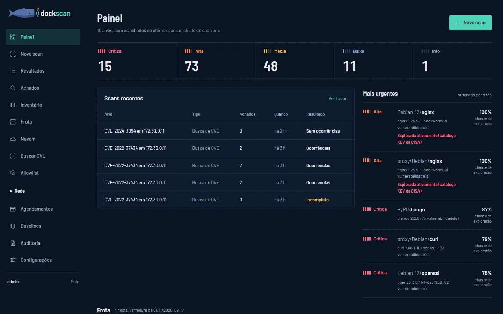
Ihr Ausgangspunkt ist das Painel (Dashboard)
Sobald der Zugriff eingerichtet ist, öffnen Sie die Oberfläche. Das Painel bündelt die neuesten Befunde jedes Ziels, die letzten Analysen und die Einträge, die Ihre Aufmerksamkeit erfordern.
Sie öffnen die lokale Oberfläche?
Wenn DockScan installiert ist, führen Sie den folgenden Befehl aus und öffnen Sie die Adresse, die im Terminal angezeigt wird. Die lokale Standardadresse lautet http://127.0.0.1:8443.
python -m dockscan uiSo verwenden Sie dieses Handbuch
Folgen Sie den Kapiteln der Reihe nach oder springen Sie über das Inhaltsverzeichnis direkt zu Ihrer Aufgabe. Die Anleitungen lassen sich auch ohne die Abbildungen nachvollziehen.
Die Screenshots stammen aus dem DockScan-Labor und zeigen Demodaten. Die Anleitung setzt ein, sobald Sie Zugriff auf die Oberfläche haben. Wie Sie sich anmelden, Ihr Passwort ändern und die Konten Ihres Teams verwalten, lesen Sie unter Konten und Zugriff.
DockScan befindet sich in Entwicklung: Sehen Sie sich an, was neu ist und was als Nächstes kommt.
Was DockScan erkennt
Die Systeme, Sprachen, Programme, Dienste und Formate, die DockScan auslesen kann, und wonach es jeweils sucht. Was nicht in dieser Liste steht, wird nicht analysiert. Die Einträge in Entwicklung werden noch nicht ausgelesen: Sie sind die nächsten Etappen des Tools.
Betriebssysteme
Die Systempakete werden auf den Maschinen, in den Containern und in den Images ausgelesen. DockScan meldet außerdem, wenn der Sicherheitssupport der Version endet, außer bei Azure Linux, openEuler und Wolfi, weil endoflife.date sie nicht erfasst.
Debian
Von der Community getragene Linux-Distribution, Basis eines großen Teils der offiziellen Images.
dpkg-Pakete, auch in Distroless-Images, und die Sicherheitshinweise von Debian.
Ubuntu
Linux-Distribution von Canonical, verbreitet auf Servern und in der Cloud.
dpkg-Pakete und die Sicherheitshinweise von Ubuntu für jede Version.
Alpine Linux
Minimale Distribution, Basis vieler Container-Images.
apk-Pakete, anhand der Alpine-Version, zusätzlich mit der eigenen Sicherheitsdatenbank von Alpine abgeglichen.
Rocky Linux
Mit Red Hat Enterprise Linux kompatible Distribution.
RPM-Pakete und die Sicherheitshinweise von Rocky Linux.
AlmaLinux
Mit Red Hat Enterprise Linux kompatible Distribution.
RPM-Pakete und die Sicherheitshinweise von AlmaLinux.
Red Hat Enterprise Linux
Die Distribution von Red Hat für Unternehmen, auch in den UBI-Images.
RPM-Pakete und die Sicherheitshinweise von Red Hat für die Repositories BaseOS, AppStream und CRB.
In Entwicklung: die Schwachstellen, die Red Hat noch nicht behoben hat.
SUSE Linux Enterprise
Die Distribution von SUSE für Unternehmen, auch in den BCI-Images.
RPM-Pakete und die Sicherheitshinweise von SUSE für die Module jedes Service Packs, auch für LTSS.
openSUSE Leap
Die von der Community getragene Distribution von SUSE.
RPM-Pakete und die Sicherheitshinweise von openSUSE Leap für jede Version.

Amazon Linux
Die Distribution von Amazon für AWS.
RPM-Pakete und die ALAS-Sicherheitshinweise, die in den Repositories von Amazon Linux 2 und 2023 veröffentlicht werden.
In Entwicklung: der Kernel, dessen Sicherheitshinweise OSV nicht enthält.
Oracle Linux
Mit Red Hat Enterprise Linux kompatible Distribution von Oracle.
RPM-Pakete und die ELSA-Sicherheitshinweise, die in den Repositories von Oracle Linux 7, 8 und 9 veröffentlicht werden.
In Entwicklung: die modularen Pakete, etwa die Streams von Node.js und PHP, und der Kernel.

Azure Linux
Die Distribution von Microsoft, früher CBL-Mariner genannt.
RPM-Pakete und die Sicherheitshinweise von Azure Linux 2 und 3.
openEuler
Von der Community getragene Distribution, die Huawei geschaffen hat.
RPM-Pakete und die Sicherheitshinweise von openEuler für jede LTS-Version.
Wolfi und Chainguard
Die Basis der minimalen Images von Chainguard.
apk-Pakete und die Sicherheitshinweise von Chainguard, getrennt von denen für Alpine.
Linux-Kernel
Der Kern des Betriebssystems.
Die laufende Version auf jeder Maschine, mit der Gesamtzahl der CVEs und denen, die jetzt wichtig sind.
Bei diesen Systemen meldet DockScan bereits das Supportende. Die Prüfung ihrer Pakete ist in Entwicklung.
- CentOS
- Fedora
Programmiersprachen
Die Abhängigkeiten werden aus den Projektdateien, aus den installierten Paketen der Maschinen, Container und Images und aus bereits kompilierten Programmen ausgelesen. Außerhalb des Paketmanagers heißt: ohne apt, apk oder dnf installiert, wie in den offiziellen Images. Die Version stammt dann aus der Datei selbst, ohne dass etwas ausgeführt wird.

Python
Sprache für Automatisierung, Daten und Webanwendungen.
requirements.txt, poetry.lock, Pipfile.lock, uv.lock und die installierten Pakete. Außerdem Python außerhalb des Paketmanagers.
Node.js
JavaScript auf dem Server, mit den Paketen aus npm.
package-lock.json, yarn.lock, pnpm-lock.yaml, bun.lock und node_modules. Außerdem Node außerhalb des Paketmanagers.
Go
Kompilierte Sprache, verbreitet bei Infrastruktur-Tools.
go.mod, go.sum und die mit Go 1.13 oder neuer kompilierten Programme, die die Module und die Go-Version enthalten.
Ruby
Die Sprache von Ruby on Rails, mit den Paketen aus RubyGems.
Gemfile.lock und die installierten Gems. Außerdem Ruby außerhalb des Paketmanagers.
PHP
Sprache für Websites und Webanwendungen, mit den Paketen aus Composer.
composer.lock und die installierten Pakete. Außerdem PHP außerhalb des Paketmanagers.
Rust
Kompilierte Sprache mit Fokus auf Speichersicherheit.
Cargo.lock und die mit cargo-auditable kompilierten Programme, die die Abhängigkeiten enthalten.
Java
Sprache der JVM, mit den Bibliotheken aus Maven.
.jar, .war und .ear, anhand der Maven-Daten oder ihres Fingerabdrucks in Maven Central, auch Bibliotheken in anderen Bibliotheken; pom.xml und gradle.lockfile. Außerdem Java außerhalb des Paketmanagers.
.NET
Plattform von Microsoft für C# und F#, mit den Paketen aus NuGet.
Die .deps.json der Anwendungen, packages.lock.json in den Projekten und die installierte .NET-Runtime.
Elixir
Funktionale Sprache, mit den Paketen aus Hex.
mix.lock in den Projekten.
Dart und Flutter
Die Sprache von Flutter, mit den Paketen aus pub.dev.
pubspec.lock in den Projekten.
Swift
Sprache von Apple, mit dem Swift Package Manager.
Package.resolved in den Projekten.
C und C++
Sprachen für die Systemprogrammierung, mit den Paketen aus Conan.
In Entwicklung: conan.lock, sobald OSV die Sicherheitshinweise von ConanCenter enthält.
Server und Datenbanken
Server und Datenbanken, die außerhalb des Paketmanagers installiert und in /usr/local oder /opt kompiliert sind, wie in mehreren offiziellen Images und in denen von Bitnami, sowie die Pakete aus dem eigenen Repository des Herstellers, die von den Sicherheitshinweisen der Distribution nicht abgedeckt werden. Die Version stammt aus der Datei selbst oder aus dem Paket, ohne dass etwas ausgeführt wird.
Apache HTTP Server
Open-Source-Webserver.
Direkt aus httpd ausgelesen, etwa im offiziellen Image.
nginx
Webserver und Reverse Proxy.
Direkt aus der Binärdatei ausgelesen, etwa in den Images von Bitnami, und aus dem Paket von nginx.org, etwa im offiziellen Image.
Apache Tomcat
Anwendungsserver für Java.
Aus den Versionshinweisen der Installation ausgelesen, etwa im offiziellen Image.
Redis
In-Memory-Datenbank, genutzt als Cache und Warteschlange.
Direkt aus redis-server ausgelesen, etwa im offiziellen Image.
PostgreSQL
Relationale Datenbank.
Direkt aus postgres ausgelesen, etwa im offiziellen Alpine-Image, und aus dem Paket von PGDG, etwa im offiziellen Debian-Image.
MariaDB
Relationale Datenbank, abgeleitet von MySQL.
Das Paket aus dem Repository von MariaDB, etwa im offiziellen Image.
MySQL
Relationale Datenbank von Oracle.
In Entwicklung: die Version von mysqld, sobald OSV die Sicherheitshinweise von MySQL enthält.
MongoDB
Dokumentendatenbank.
Das Paket aus dem Repository von MongoDB, etwa im offiziellen Image.
RabbitMQ
Nachrichtenwarteschlange zwischen Anwendungen.
RabbitMQ in /opt/rabbitmq, etwa im offiziellen Image, und das rpm-Paket des Herstellers.
Netzwerkdienste
Das Modul Rede (Netzwerk) erkennt diese Dienste an ihrer Antwort, ohne sich anzumelden. Was ungeschützt exponiert ist, wird zum Befund.
SSH
Fernzugriff auf die Server.
Version über das Banner des Dienstes.
HTTP und HTTPS
Websites, APIs und Dashboards.
Server und Version über den Antwort-Header.
TLS-Zertifikate
Die Verschlüsselung der Dienste.
Ungültiges oder bald ablaufendes Zertifikat.
Docker Engine
Die API, die Docker steuert.
Exponiert ohne Authentifizierung oder ohne Verschlüsselung.
Image-Registry
Wo die Container-Images liegen.
Eine Registry ohne Verschlüsselung wird zum Befund.
MySQL und MariaDB
Relationale Datenbanken.
Version über den Handshake des Protokolls.
PostgreSQL
Relationale Datenbank.
Erkannt an der Antwort auf die TLS-Anfrage.
Redis
In-Memory-Datenbank.
Ein ohne Passwort offener Dienst wird zum Befund.
MongoDB
Dokumentendatenbank.
Erkannt an der Antwort auf den Befehl hello.
Elasticsearch und OpenSearch
Suche und Datenanalyse.
Ein ohne Authentifizierung offener Dienst wird zum Befund.
Kubernetes
Die Cluster-API, das kubelet der Knoten und etcd.
Anonymer oder exponierter Zugriff wird zum Befund.
Jenkins
Server für kontinuierliche Integration.
Version über den Header X-Jenkins.
Grafana
Dashboards für das Monitoring.
Erkannt am Titel der Seite.
Kibana
Analyse-Dashboard für Elasticsearch.
Erkannt am Titel der Seite.
Portainer
Container-Verwaltung im Browser.
Erkannt am Titel der Seite.
FTP
Dateiübertragung.
Die Version über das Banner und ob FTPS (AUTH TLS) angeboten wird; ohne FTPS gehen Benutzername, Passwort und Dateien unverschlüsselt über das Netz.
SMTP
Versand von E-Mails.
Die Version über das Banner, STARTTLS und eine Anmeldung, die schon vor der Verschlüsselung angeboten wird.
RDP
Remotedesktop von Windows.
Die Exposition des Dienstes und ob NLA verlangt wird, über die erste Aushandlung, ohne Zugangsdaten.
Prometheus
Sammeln von Metriken.
Die API und die Konfiguration, die ohne Anmeldung offen sind, und die Metriken der Exporter, mit der Version.
RabbitMQ
Nachrichtenwarteschlange zwischen Anwendungen.
Die Version über das AMQP-Protokoll, ohne Anmeldung, die Verbindung ohne TLS und die exponierte Verwaltungsoberfläche.
Container, Kubernetes und Cloud
Docker
Container-Plattform.
Laufende Container auf den Maschinen, über den Serverbestand, und mit docker save gespeicherte Images; zu jedem Paket des Images die Schicht, aus der es stammt, und ob die Behebung im Basis-Image oder im Dockerfile liegt.
Dockerfile
Die Bauanleitung des Images.
Schlechte Praktiken, etwa als root laufen, ein Geheimnis in ENV und das ganze Projekt kopieren.
Docker Compose
Die Beschreibung der Dienste einer Anwendung in Containern.
compose.yaml und docker-compose.yml: privilegierter Modus, Docker-Socket, Verzeichnisse und Namespaces des Hosts, Capabilities, Datenbank- und Verwaltungsports, die auf allen Netzwerkschnittstellen offen sind, Image ohne Version, in die Datei geschriebenes Passwort und Datenbank ohne Passwort.
Images aus Registries
Docker Hub, GitHub Container Registry und andere kompatible Registries.
Das Image wird direkt aus der Registry ausgelesen, ohne Docker, mit Prüfung der cosign-Signatur.
Kubernetes
Container-Orchestrierung.
YAML- und JSON-Manifeste: Privilegien, root, hostPath, Limits und Token des Servicekontos.
In Entwicklung: das Auslesen der unter Nuvem hinterlegten Cluster.
Amazon Web Services
Cloud von Amazon.
EC2, Security Groups, ECR und EKS, nur mit Lesezugriff.
Microsoft Azure
Cloud von Microsoft.
In Entwicklung: das Auslesen der Konten, im selben Format wie bei AWS. Das Hinterlegen funktioniert bereits.
Google Cloud
Cloud von Google.
In Entwicklung: das Auslesen der Projekte, im selben Format wie bei AWS. Das Hinterlegen funktioniert bereits.
Helm
Paketmanager für Kubernetes.
Die Charts, gerendert mit helm template, mit denselben Prüfungen wie die Manifeste, bei der Analyse des Projekts.
Terraform
Infrastruktur als Code.
Die .tf-Dateien, terraform.tfvars und der Plan als JSON: Verwaltungs- und Datenbankports, die zum Internet offen sind, öffentliche Datenbanken und Buckets und eine offene Cluster-API.
Podman
Container ohne Hintergrunddienst.
Die Podman-Container auf den Maschinen des Serverbestands, auch die ohne root laufenden Container des Benutzers der Verbindung.
Formate und Integrationen
CycloneDX
Offenes SBOM-Format von OWASP.
Erzeugt das SBOM der Analysen und liest die SBOMs anderer Tools, auch VEX in diesem Format.
SPDX
SBOM-Format der Linux Foundation.
Erzeugt das SBOM der Analysen und liest die SBOMs anderer Tools.
OpenVEX
Erklärt die Schwachstellen, die nicht zutreffen.
Was als nicht betroffen oder behoben erklärt ist, erscheint nicht mehr im Bericht.
SARIF
Format für Ergebnisse der statischen Analyse.
Die Befunde erscheinen im Tab Security von GitHub.
GitHub Actions
Die Automatisierung von GitHub.
Eigene Action, die DockScan in der CI ausführt und den Build fehlschlagen lässt, wenn die Richtlinie nicht erfüllt ist.
Code-Repositories
Ordner und Git-Repositories eines Projekts.
Das ganze Projekt auf einmal, als Ordner, .zip oder Git-URL: Abhängigkeiten, Dockerfiles, Docker-Compose-Dateien, Manifeste, Charts, Terraform, Geheimnisse und Lizenzen.
Lizenzen
Die Softwarelizenzen der Pakete.
Die Lizenzen der Abhängigkeiten der Anwendung: AGPL und SSPL, GPL und schwaches Copyleft wie LGPL und MPL.
Jira
Aufgabenverwaltung von Atlassian.
Legt aus einem Befund ein Ticket an, mit dem Asset, dem Paket und der Behebung.
Benachrichtigungen an das Team
E-Mail und Messenger.
Benachrichtigt am Ende des Scans per Webhook (Slack, Teams, Discord) oder per E-Mail, wenn ein wichtiger Befund auftaucht.
Woher die Daten stammen
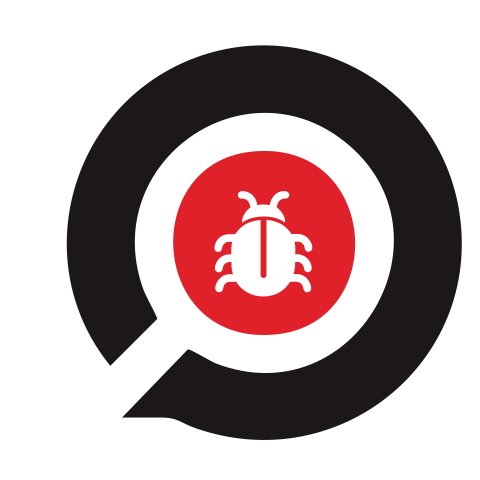
OSV
Offene Schwachstellendatenbank, gepflegt von Google.
Die Sicherheitshinweise der Pakete, der Distributionen und von Bitnami.
KEV
Katalog der CISA, der Cybersicherheitsbehörde der USA, mit den ausgenutzten Schwachstellen.
Markiert die aktiv ausgenutzten Befunde.
EPSS
Bewertung von FIRST für die Wahrscheinlichkeit einer Ausnutzung in den nächsten 30 Tagen.
Ordnet die Befunde nach Priorität.
endoflife.date
Daten zum Supportende von Systemen und Programmen.
Meldet, wenn der Support der Systemversion endet.
Sicherheitsdatenbank von Alpine
Die Liste der Behebungen, die Alpine selbst veröffentlicht.
Prüft die Alpine-Pakete, wenn OSV eine falsche Behebung verzeichnet.
Sicherheitshinweise von Amazon Linux und Oracle Linux
Das updateinfo, die Liste der Sicherheitsupdates, die in den Repositories der beiden Distributionen veröffentlicht wird.
Prüft die RPM-Pakete dieser Distributionen, deren Sicherheitshinweise OSV nicht enthält.
Maven Central
Das öffentliche Repository der Java-Bibliotheken.
Erkennt JAR-Dateien ohne Maven-Daten anhand des Fingerabdrucks der Datei.
deps.dev
Offene Datenbank von Google mit den Daten der veröffentlichten Pakete.
Ergänzt die Lizenz der Abhängigkeiten, bei denen sie in der Datei fehlt.
Die Marken gehören ihren jeweiligen Inhabern und dienen nur dazu, das jeweilige Projekt zu kennzeichnen. Die Logos stammen aus dem Projekt Simple Icons und von den Projekten selbst; Protokolle und Einträge ohne eigenes Logo erscheinen mit einem allgemeinen Symbol. Einträge in Entwicklung erscheinen mit grauem Logo.
Bedienung
Hier sehen Sie, wie eine Analyse abläuft und wofür die einzelnen Funktionen der Oberfläche gedacht sind. Die folgenden Kapitel beschreiben die Schritte im Detail, jeweils mit der passenden Seite.
Der vollständige Ablauf, Schritt für Schritt
Wählen Sie das Ziel
Öffnen Sie Novo scan (Neuer Scan), um die IPs der Maschinen einzugeben. Für IPs, Ports und Dienste folgen Sie der Netzwerk-Anleitung.
Legen Sie Eingabe und Richtlinie fest
Geben Sie die IP-Adressen ein und richten Sie den SSH-Zugriff unter Frota (Serverbestand) ein. Legen Sie fest, ab welchem Schweregrad der Scan als nicht bestanden gilt und ob mit einer früheren Analyse verglichen werden soll.
Starten und verfolgen Sie die Analyse
Klicken Sie auf „Iniciar varredura por IP“ (IP-Scan starten) oder, im Netzwerkmodul, auf „Iniciar varredura“ (Scan starten). Warten Sie, bis die Analyse abgeschlossen ist, und prüfen Sie Fehlermeldungen und Hinweise zur Abdeckung.
Untersuchen Sie die Befunde
Filtern Sie unter Resultados (Ergebnisse) die Einträge und lesen Sie Fundstelle, Details und Empfehlung. Die Zustände „Passou“ (Bestanden) und „Falhou“ (Nicht bestanden) beziehen sich auf die konfigurierte Richtlinie.
Beheben Sie die Probleme und wiederholen Sie die Analyse
Ändern Sie das Ziel und führen Sie einen weiteren, vergleichbaren Scan aus. Mit Comparar scans (Scans vergleichen) prüfen Sie neue und fortbestehende Einträge sowie solche, die nicht mehr gemeldet werden.
Sichern Sie das Ergebnis und richten Sie eine Routine ein
Exportieren Sie den Bericht im benötigten Format. Um die Analyse regelmäßig zu wiederholen, richten Sie einen Zeitplan ein.
Was die einzelnen Menüpunkte tun
Painel (Dashboard)
Zeigt die neuesten Befunde je Ziel, die letzten Scans und dringende Einträge.
Prüfen Sie die Übersicht und öffnen Sie eine Analyse unter „Scans recentes“ (Letzte Scans). Klicken Sie auf die Zahl eines Schweregrads oder auf „Ver em Achados“ (In Achados anzeigen), um genau diese Befunde bereits gefiltert zu öffnen. Hinweise ansehen.
Novo scan (Neuer Scan)
Analysiert das System und die Container der per IP ausgewählten Maschinen.
Geben Sie die IPs ein, prüfen Sie die Richtlinie und starten Sie. Schritte ansehen.
Resultados (Ergebnisse)
Bewahrt den Verlauf auf und ermöglicht es, die Befunde jeder Analyse zu untersuchen.
Suchen Sie den Scan, öffnen Sie das Ergebnis, wenden Sie Filter an und lesen Sie die Details. Schritte ansehen.
Achados (Befunde)
Fasst die Befunde des jeweils letzten Scans jedes Ziels in einer Tabelle zusammen, mit einer SQL-ähnlichen Abfrage, dem Zustand jedes Befunds anhand des Verlaufs, Triage mit Frist, Tags und gespeicherten Ansichten.
Klicken Sie in das Abfragefeld, wählen Sie Feld, Operator und Werte und führen Sie die Abfrage aus. Schritte ansehen.
Inventário (Inventar)
Fasst Maschinen, Container und Dienste aus den Scans in einer Karte und einer Liste zusammen. In der Cloud entdeckte Maschinen werden über ihre IP aufgenommen, zusammen mit denen aus dem Serverbestand und dem Netzwerk.
Klicken Sie auf eine Maschine, um ihre Einträge aufzuklappen, wählen Sie eine Ressource aus, um die Details zu sehen, und nutzen Sie die Filter, um eine IP oder einen Dienst zu finden.
Die Karte greift auf die gespeicherten Daten zurück. Historische Zustände und Datumsangaben helfen, alte oder unvollständige Erfassungen zu erkennen. Die Bereiche sind visuelle Gruppierungen der IPs.
Frota (Serverbestand)
Speichert das Inventar der Hosts, deren Container analysiert werden.
Erfassen Sie die Hosts, speichern Sie und verwenden Sie „Configurar varredura“ (Scan konfigurieren). Schritte ansehen.
Nuvem (Cloud)
Erfasst Cloud-Konten und Kubernetes-Cluster mit Zugangsdaten, die nur Lesezugriff haben. AWS wird bereits ausgelesen; die übrigen Anbieter folgen in den nächsten Etappen.
Wählen Sie den Anbieter, füllen Sie die Felder aus, testen Sie die Verbindung und verwenden Sie „Descobrir agora“ (Jetzt erkennen). Schritte ansehen.
Buscar CVE (CVE suchen)
Prüft eine CVE oder GHSA live auf den angegebenen IPs, mit einer aktuellen Erfassung über SSH.
Allowlist
Unterdrückt bereits bewertete Befunde in den nächsten Analysen und bei der Auswertung der Richtlinie.
Geben Sie einen Eintrag pro Zeile ein, prüfen Sie dessen Reichweite und speichern Sie. Schritte ansehen.
Rede (Netzwerk)
Vereint Netzwerkscan, Hosts, Dienste, Docker-Exposition, Registries, TLS-Zertifikate und Netzwerkbefunde.
Beginnen Sie mit „Varrer a rede“ (Netzwerk scannen) und untersuchen Sie die Ergebnisse auf den Seiten des Moduls. Schritte ansehen.
Agendamentos (Zeitpläne)
Wiederholt Analysen mit gespeichertem Intervall und gespeicherter Eingabe.
Legen Sie Name, Typ, Intervall, Uhrzeit, Ziel und Richtlinie fest. Schritte ansehen.
Baselines
Vergleicht kompatible Analysen und zeigt, wie sich die Befunde verändert haben.
Wählen Sie den aktuellen Scan und die Referenz aus und prüfen Sie die Gruppen. Schritte ansehen.
Auditoria (Audit)
Ermöglicht die Einsicht in die Zugriffs- und Betriebsprotokolle der Oberfläche.
Öffnen Sie den Menüpunkt und suchen Sie nach Benutzer, Aktion, Ziel oder Ergebnis. Schritte ansehen.
Configurações (Einstellungen)
Zeigt Informationen zur Instanz, Upload-Limits und Netzwerkoptionen.
Prüfen Sie die Verbindung und passen Sie Scope und Netzwerkoptionen an. Schritte ansehen.
Die Seiten unter Rede
Painel de rede (Netzwerk-Dashboard)
Fasst die ausgewählten Scans zusammen. Wählen Sie die Analysen aus und filtern Sie nach IP oder Schweregrad, um die Kennzahlen einzusehen.
Varrer a rede (Netzwerk scannen)
Legt eine Analyse an. Geben Sie die autorisierten Ziele ein, prüfen Sie Profil, Ports und Module und klicken Sie auf „Iniciar varredura“.
Hosts
Ordnet die Beobachtungen nach Host. Wählen Sie einen Scan und öffnen Sie den Host, um Ports, Dienste und Nachweise zu untersuchen.
Serviços (Dienste)
Listet die erkannten Dienste auf. Wählen Sie den Scan, filtern Sie die Liste und prüfen Sie die beobachteten Daten.
Exposição do Docker (Docker-Exposition)
Fasst die Beobachtungen zu Docker-APIs zusammen. Prüfen Sie die Nachweise der Exposition und die zugehörigen Befunde.
Registries
Fasst die in den Registries beobachteten Daten zusammen. Wählen Sie den Scan und sehen Sie sich die Einträge und ihre Nachweise an.
Certificados TLS (TLS-Zertifikate)
Ermöglicht die Untersuchung der TLS-Beobachtungen. Prüfen Sie die Zertifikatsdaten und die in der Analyse gemeldeten Probleme.
Achados de rede (Netzwerkbefunde)
Fasst die Netzwerkbefunde zusammen. Filtern Sie nach Ziel, Port, Dienst oder Schweregrad, öffnen Sie einen Eintrag und erfassen Sie die Triage mit einem Kommentar.
Em andamento (Laufend)
Zeigt den Fortschritt der aktiven Analysen. Öffnen Sie die Live-Ergebnisse oder verwenden Sie die Steuerelemente zum Pausieren, Fortsetzen und Stoppen.
Histórico (Verlauf)
Hilft beim Auffinden früherer Analysen. Filtern Sie den Verlauf und nutzen Sie die Aktionen, um eine Analyse zu öffnen, zu wiederholen, zu vergleichen, zu exportieren oder zu löschen.
Comparar varreduras (Scans vergleichen)
Vergleicht Abdeckung und Beobachtungen zweier Analysen. Wählen Sie die Scans aus und prüfen Sie auch die Einträge ohne vergleichbare Abdeckung.
Perfis (Profile)
Speichert Kombinationen aus Ports, Erkennung und Prüfungen. Legen Sie ein Profil an oder duplizieren Sie ein bestehendes, passen Sie die Felder an und speichern Sie.
Allowlist: So legen Sie eine Ausnahme an
- Öffnen Sie „Allowlist“ im Menü.
- Geben Sie pro Zeile eine Regel, die Fundstelle eines Pakets oder eine Kennung ein. Zeilen, die mit
#beginnen, dienen als Kommentare. - Prüfen Sie den Eintrag und klicken Sie auf „Salvar allowlist“ (Allowlist speichern).
- Führen Sie einen neuen Scan aus, damit die Änderung greift. Der bisherige Verlauf bleibt unverändert.
Ein Paketeintrag kann mehrere Schwachstellen unterdrücken. Prüfen Sie die Reichweite der Ausnahme, bevor Sie speichern.
Auditoria: So finden Sie eine Aktivität
- Öffnen Sie „Auditoria“ im Menü.
- Geben Sie in „Buscar atividade“ (Aktivität suchen) Benutzer, Aktion, Ziel oder Ergebnis ein.
- Prüfen Sie Datum, Benutzer, Aktion, Ziel, IP und Ergebnis der gefundenen Aktivität.
- Leeren Sie die Suche, um zur verfügbaren Liste zurückzukehren.
Configurações: Was Sie prüfen sollten und wie Sie das Netzwerk anpassen
- Öffnen Sie „Configurações“, um Version, Verbindung und Upload-Limits einzusehen.
- Prüfen Sie unter „Configurações de rede“ (Netzwerkeinstellungen) die autorisierten Scopes, die Ausschlüsse und die Limits der Analyse.
- Prüfen Sie auch das Berichtsformat, die Nachweise und die Einstellungen der Oberfläche.
- Klicken Sie auf „Salvar configurações de rede“ (Netzwerkeinstellungen speichern). Änderungen am Scope und an globalen Limits sind nur möglich, wenn keine Scans aktiv sind.
- Richten Sie unter „Jira“ und „Avisos à equipe“ (Benachrichtigungen an das Team), nur für Administratoren, das Anlegen von Tickets aus den Befunden und die Benachrichtigungen am Ende der Scans per Webhook oder E-Mail ein. Mit „Testar a conexão“ (Verbindung testen) und „Enviar um teste“ (Test senden) prüfen Sie die Einstellungen vor der Verwendung; das Ergebnis jeder Benachrichtigung steht unter „Auditoria“ (Audit).
Lesen Sie die Bestätigung genau, bevor Sie die Aufbewahrungsdauer verkürzen: Diese Änderung kann alte Netzwerkscans und ihre Berichte löschen.
Achados de rede: So erfassen Sie die Triage
- Öffnen Sie „Rede → Achados de rede“.
- Suchen Sie den Befund mithilfe der Filter und öffnen Sie seine Details.
- Lesen Sie den Nachweis und tragen Sie die Begründung in „Comentário de triagem“ (Triage-Kommentar) ein.
- Wählen Sie die Aktion: revisado (geprüft), falso positivo (Falsch-Positiv) oder risco aceito (akzeptiertes Risiko). Mit „Reabrir“ (Wieder öffnen) öffnen Sie einen Befund erneut.
Die Triage hält die Bewertung des Eintrags fest. Prüfen Sie den Nachweis und die Abdeckung der Analyse, bevor Sie über seinen Zustand entscheiden.
Die Screenshots zu jedem Schritt stammen aus dem DockScan-Labor und zeigen Demodaten. Seiten und Bezeichnungen können sich ändern, solange das Tool in Entwicklung ist.
Ihr erster Scan per IP
Geben Sie die Adressen der Maschinen ein. DockScan erfasst die Daten über SSH und erkennt die installierten Pakete automatisch.
Richten Sie den SSH-Zugriff ein
Hinterlegen Sie unter Frota (Serverbestand) Zugangsdaten im Tresor, mit dem Geltungsbereich der zulässigen IPs, oder richten Sie im Inventar einen SSH-Schlüssel ein.
Öffnen Sie „Novo scan“ (Neuer Scan) und geben Sie die IPs ein
Geben Sie eine IP pro Zeile ein oder trennen Sie die IPs durch Kommas. Die Schaltflächen des Inventars fügen bereits erfasste IPs hinzu. Die Auswahl kann IPv4 und IPv6 enthalten.
Legen Sie die Richtlinie der Analyse fest
Wählen Sie den Mindestschweregrad, ab dem der Scan als nicht bestanden gilt, sowie die Optionen für CVEs, KEV und EPSS. Lassen Sie den Vergleich aktiviert, um Änderungen an denselben IPs zu verfolgen.
Klicken Sie auf „Iniciar varredura por IP“ (IP-Scan starten)
Das Ergebnis aktualisiert sich automatisch. Die Erfassung verwendet nur die eingegebenen IPs, auch wenn das Inventar weitere Maschinen enthält.
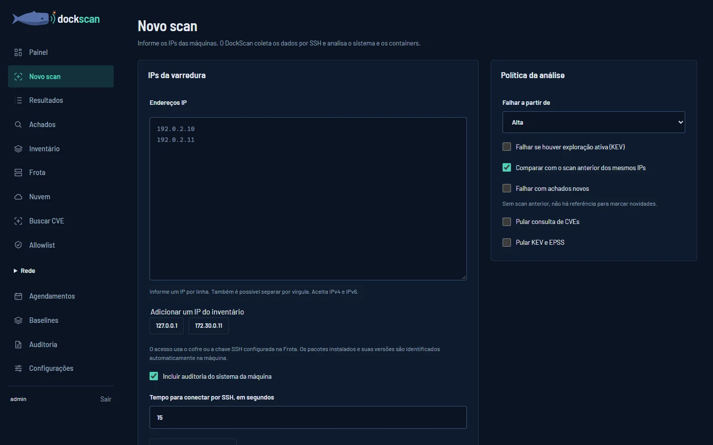
Die Namen und Versionen der Pakete werden direkt auf der Maschine ermittelt. Sie müssen keine Pakete angeben oder hochladen, um den Scan zu starten. Die entfernt ausgeführten Befehle lesen nur Daten aus und installieren keinen Agenten.
| Zweck | Aufruf über | Ziel |
|---|---|---|
| System und Container auditieren | Novo scan | IPs der Maschinen, mit SSH-Zugriff. |
| Eine bestimmte Schwachstelle untersuchen | Buscar CVE (CVE suchen) | IPs der Maschinen und eine CVE- oder GHSA-Kennung. |
| Ports und Dienste erkennen | Rede (Netzwerk) → Varrer a rede (Netzwerk scannen) | IPs oder Bereiche, die im Netzwerk-Scope autorisiert sind. |
| Den Code eines Projekts analysieren | Novo scan → Projeto (Projekt) | https-URL des Git-Repositorys oder das Projekt als .zip. |
Wie analysiere ich ein Projekt?
- Geben Sie unter „Novo scan“ (Neuer Scan) im Bereich „Projeto“ (Projekt) die https-URL des Git-Repositorys ein oder wählen Sie das Projekt als .zip aus, etwa die Datei aus „Download ZIP“ auf GitHub.
- Klicken Sie auf „Analisar o projeto“ (Projekt analysieren). Die Richtlinie daneben gilt auch für das Projekt.
- Das Ergebnis zeigt die Schwachstellen der Abhängigkeiten, mit einem Befund für jede Datei, die das Paket enthält, außerdem die Probleme in Dockerfiles, Docker-Compose-Dateien, Kubernetes-Manifesten, Helm-Charts und Terraform, im Code vergessene Geheimnisse und Lizenzen, die Vorsicht erfordern.
Das Repository wird nur mit dem letzten Commit geklont und am Ende gelöscht. Es funktioniert nur mit öffentlichen Repositories oder mit dem Token direkt in der URL. Ordner wie node_modules, .venv und vendor werden übersprungen. Für Charts muss helm auf dem Server installiert sein; ohne helm meldet das Ergebnis, dass das Chart nicht analysiert wurde.
Im Terminal: dockscan repo ., dockscan repo projeto.zip oder dockscan repo https://github.com/org/projeto.git. Eine einzelne Compose-Datei: dockscan compose compose.yaml.
Was erfasst der Scan?
Ausgelesen werden die Pakete und die Konfiguration des Systems, die Container sowie verfügbare Daten zu Prozessen und Ports. Das Ergebnis meldet Zugriffsfehler und Teile der Erfassung, die unvollständig geblieben sind.
„Pular consulta de CVEs“ (CVE-Abfrage überspringen) deaktiviert die Abfrage von Schwachstellen. „Pular KEV e EPSS“ (KEV und EPSS überspringen) deaktiviert diese Anreicherung. Liefert eine unvollständige Erfassung keine Befunde, sind Schwachstellen damit nicht ausgeschlossen.
Ergebnisse verstehen
Das Ergebnis zeigt, was gefunden wurde, wo das Problem liegt und welcher nächste Schritt empfohlen wird.
Prüfen Sie Zustand und Hinweise
Öffnen Sie den Scan über das Painel (Dashboard) oder über Resultados (Ergebnisse). Prüfen Sie, ob er abgeschlossen ist, ob ein Fehler aufgetreten ist und welche Limits oder Abfragen die Abdeckung beeinflusst haben.
Filtern Sie, was Sie untersuchen möchten
Mit Severidade (Schweregrad) und Buscar achado (Befund suchen) finden Sie eine Regel, ein Paket, eine CVE oder eine Fundstelle. Wechseln Sie unter Exibir (Anzeigen) zwischen „Pacotes e regras“ (Pakete und Regeln) und „Vulnerabilidades individuais“ (Einzelne Schwachstellen).
Öffnen Sie die Details und lesen Sie die Empfehlung
Jeder Eintrag nennt Schweregrad, Regelkennung und Fundstelle. Über Ver detalhes (Details anzeigen) sehen Sie den Nachweis und können die Korrektur planen. Sofern verfügbar, helfen KEV und EPSS bei der Priorisierung.
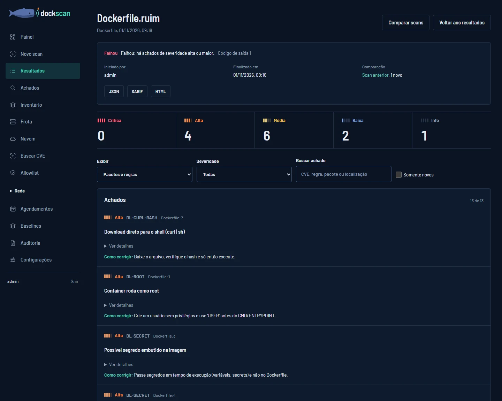
„Passou“ (Bestanden) kann auch bei vorhandenen Befunden erscheinen
Der Zustand zeigt an, ob die Schwelle der gewählten Richtlinie erreicht wurde. Ein Scan mit Befunden unterhalb des konfigurierten Grenzwerts kann bestehen. Prüfen Sie Richtlinie, Hinweise und Abdeckung, bevor Sie daraus schließen, dass das Ziel sicher ist.
Ein Paketbefund kann mehrere Schwachstellen zusammenfassen. Die Einzelansicht hilft, jede Kennung zu prüfen, ohne die Anzahl der Pakete mit der Anzahl der Schwachstellen zu verwechseln.
Was ist der Unterschied zwischen „Falhou“ (Nicht bestanden) und „Erro na análise“ (Analysefehler)?
„Falhou“ und „Passou“ sind das Ergebnis der Richtlinie: Die Analyse wurde abgeschlossen, und ein Befund hat den konfigurierten Grenzwert erreicht oder eben nicht. „Erro na análise“ ist ein technischer Fehler: Die Erfassung wurde nicht abgeschlossen. Dieser Zustand ist rot gepunktet unterstrichen, damit er nicht mit „Falhou“ verwechselt wird. „Incompleto“ (Unvollständig) bedeutet, dass ein Teil der Abdeckung fehlt.
Befunde abfragen
Die Seite Achados (Befunde) fasst die Befunde des jeweils letzten Scans jedes Ziels aus allen Quellen in einer einzigen Tabelle zusammen. Mit einer SQL-ähnlichen Abfrage finden Sie, was Sie brauchen.
Öffnen Sie „Achados“ im Menü
Die Tabelle zeigt zunächst alle Befunde, vom dringendsten bis zum am wenigsten dringenden: zuerst nach Priorität, dann die aktiv ausgenutzten (KEV), nach Schweregrad und nach Ausnutzungswahrscheinlichkeit (EPSS).
Klicken Sie in das Abfragefeld und wählen Sie ein Feld
Die Liste zeigt die Felder. Wenn Sie mit der Maus auf ein Feld zeigen, öffnen sich daneben seine Optionen: Wählen Sie den Operator, markieren Sie einen oder mehrere Werte und klicken Sie auf „Adicionar à consulta“ (Zur Abfrage hinzufügen). Die vorgeschlagenen Werte stammen aus Ihren eigenen Befunden, jeweils mit ihrer Anzahl.
Kombinieren Sie Bedingungen und führen Sie die Abfrage aus
Sobald eine Abfrage steht, klicken Sie erneut in das Feld, um mit „e“ (und), „ou“ (oder) oder „ordenar por“ (sortieren nach) fortzufahren, oder verwenden Sie „Adicionar outro filtro“ (Weiteren Filter hinzufügen). Klicken Sie dann auf „Consultar“ (Abfragen) oder drücken Sie Enter. Wer die Abfragesprache bereits kennt, kann die Abfrage direkt eintippen.
Gruppieren, sortieren, teilen und exportieren Sie
Unter „Agrupar por“ (Gruppieren nach) sehen Sie die Befunde nach Asset, Schwachstelle, Paket, Quelle, Zustand oder Tag; klicken Sie auf eine Gruppe, um nur nach ihr zu filtern. Klicken Sie auf eine Spaltenüberschrift, um zu sortieren. Die Abfrage steht in der Adresse der Seite, sodass Sie den Link teilen können. „Exportar CSV“ (CSV exportieren) und „Exportar JSON“ (JSON exportieren) übernehmen das Ergebnis der Abfrage.
Öffnen Sie die Details eines Befunds
Klicken Sie auf die Kennung, etwa CVE-2023-44487, oder auf eine beliebige Stelle in der Spalte Achado (Befund). Rechts öffnet sich ein Bereich mit CVSS, EPSS, aktiver Ausnutzung, dem Fundort, der Behebung, der Beschreibung und den Referenzen aus OSV, den anderen Assets mit derselben Schwachstelle und dem Erfassungsverlauf des Assets. Bei Scans von Images zeigt „Camada“ (Schicht), aus welcher Schicht das Paket stammt und ob die Behebung im Basis-Image oder im Dockerfile liegt. Ist Jira eingerichtet, legt „Abrir ticket no Jira“ (Ticket in Jira anlegen) das Ticket zum Befund an. Von dort aus triagieren Sie den Befund und wechseln zum vorherigen oder nächsten Befund der Abfrage; Esc oder „Fechar“ (Schließen) führt zurück zur Tabelle.
Führen Sie die Triage durch
Markieren Sie die Befunde in der ersten Spalte. Wählen Sie in der eingeblendeten Leiste Revisado (Geprüft), Falso positivo (Falsch-Positiv), Risco aceito (Akzeptiertes Risiko) oder Reabrir (Wieder öffnen), geben Sie gegebenenfalls die Frist sowie die Begründung an und klicken Sie auf „Aplicar triagem“ (Triage anwenden). Falso positivo und Risco aceito erfordern eine Begründung; alles wird in der Auditoria (Audit) protokolliert.
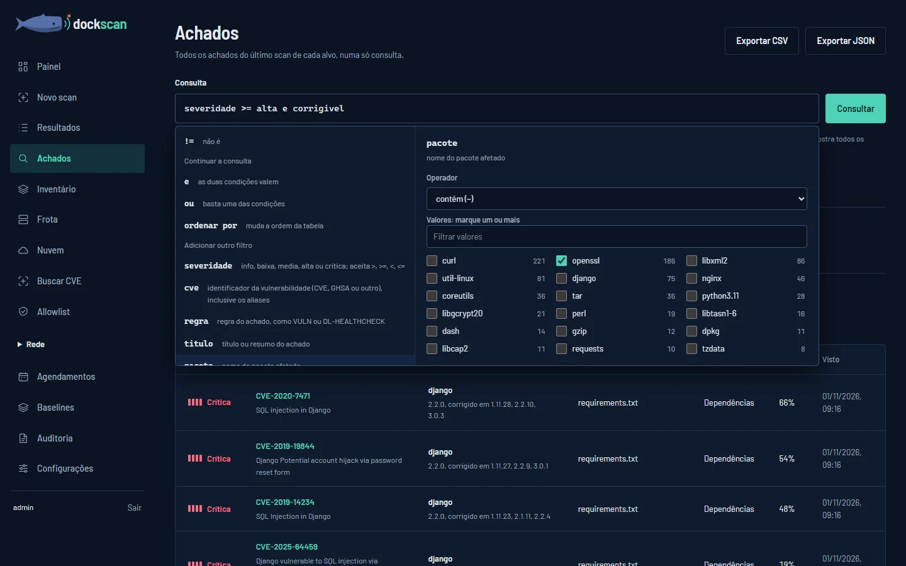
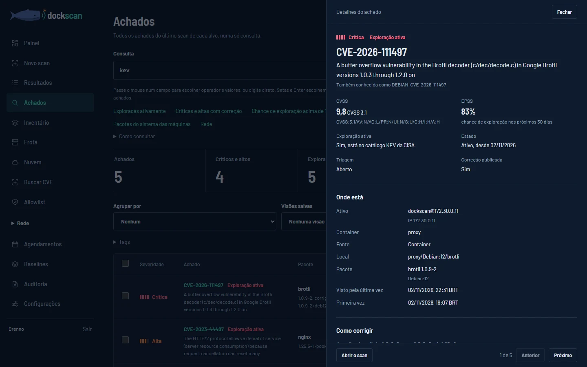
severidade >= alta e corrigivel
pacote ~ openssl e (fonte = maquina ou fonte = container)
cve em (CVE-2022-37434, CVE-2024-3094)
ip em 172.30.0.0/24 e visto_em > -7d
"nginx" ordenar por epss desc
estado = novo e severidade >= alta
triagem = risco_aceito ordenar por prazo asc
tag = ambiente:producao
camada = base e corrigivel| Operator | Bedeutung |
|---|---|
| = und != | Gleich oder ungleich. Beide akzeptieren * als Platzhalter, etwa in versao = 1.2.*. |
| > >= < <= | Größer oder kleiner, für Schweregrad, EPSS, Port und Datum. |
| ~ und !~ | Enthält den Text bzw. enthält ihn nicht. |
| em (a, b) | Ist in der Liste enthalten. Bei IPs ist auch ein Bereich möglich: ip em 10.0.0.0/24. |
| existe | Das Feld hat einen Wert. |
| e, ou, não, ( ) | Verknüpfen und gruppieren die Bedingungen (und, oder, nicht, Klammern). Auch and, or, not und in funktionieren. |
Die Tabelle verwendet den letzten abgeschlossenen Scan jedes Ziels. Im Serverbestand zählt jede Maschine einzeln: War eine Maschine beim neuesten Scan nicht erreichbar, gilt ihre letzte erfolgreiche Erfassung. CVE-Suchen fließen nicht ein, weil dieselben Pakete bereits über den Serverbestand erscheinen.
Behobene Befunde, Falsch-Positive und akzeptierte Risiken bleiben in der Tabelle ausgeblendet, bis die Abfrage sie ausdrücklich einbezieht. Die Übersicht zeigt, wie viele ausgeblendet sind, und bietet einen Direktlink, um sie einzublenden.
| Zustand | Wann er erscheint |
|---|---|
| Novo (Neu) | Der Befund ist bei diesem Ziel noch nie aufgetreten. |
| Ativo (Aktiv) | Besteht seit der vorherigen Erfassung fort. |
| Reapareceu (Wieder aufgetreten) | War in einer vollständigen Erfassung verschwunden und ist zurückgekehrt. |
| Corrigido (Behoben) | Tritt in einer vollständigen Erfassung nicht mehr auf. Eine Teilerfassung beweist die Korrektur nicht: Der Befund bleibt aktiv, mit dem Hinweis auf die Teilerfassung. Ein Hinweis wie „regras do sudo não verificadas“ (sudo-Regeln nicht geprüft) kennzeichnet nur das als unvollständig erfasst, was davon abhängt. |
Woher stammen die Daten im Befundbereich?
CVSS, EPSS, aktive Ausnutzung, Paket und Behebung stammen aus dem Scan. Beschreibung, Daten, Schwäche (CWE) und Referenzen stammen aus OSV: Der DockScan-Server ruft sie beim Öffnen des Bereichs ab und speichert sie einen Tag lang. Ohne Internet zeigt der Bereich den Rest an und meldet, dass OSV nicht geantwortet hat.
Der Verlauf zeigt die letzten Erfassungen des Assets: Encontrado (Gefunden), Não encontrado (Nicht gefunden) oder Coleta parcial (Teilweise Erfassung), wenn das Fehlen die Behebung nicht beweist. Die Adresse der Seite erhält ?achado=, sodass der Link direkt denselben Befund öffnet.
Wie legt DockScan die Priorität fest?
Jede Schwachstelle erhält eine von vier Prioritäten, und die Seite zeigt jeweils die Gründe dafür an:
- Corrigir agora (Sofort beheben): aktiv ausgenutzt (KEV); Ausnutzungswahrscheinlichkeit (EPSS) von 10 % oder mehr, wenn das Paket verwendet wird oder über das Netzwerk erreichbar ist; oder kritisch und über das Netzwerk erreichbar.
- Esta semana (Diese Woche): EPSS von 10 % oder mehr; oder kritisch oder hoch und dazu EPSS von 1 % oder mehr, in Verwendung oder über das Netzwerk erreichbar.
- Planejar (Planen): die übrigen kritischen und hohen, die mit EPSS von 1 % oder mehr und die mittleren, für die es bereits eine Behebung gibt.
- Acompanhar (Beobachten): der Rest.
Ein installiertes Paket, das kein Prozess lädt, sinkt um eine Stufe. Konfigurationsbefunde ohne CVE folgen dem Schweregrad. Zum Abfragen verwenden Sie prioridade = agora, em_uso oder exposto.
Welche Felder kann ich abfragen?
severidade, cve, regra, titulo, pacote, versao, ecossistema, correcao, corrigivel, fonte, ativo, ip, porta, container, local, epss, kev, prioridade, em_uso, exposto, camada, novo, visto_em, estado, triagem, primeiro_visto, corrigido_em, prazo, tag und scan. Die Hilfe „Como consultar“ (So fragen Sie ab) direkt auf der Seite beschreibt jedes Feld.
Ein Ja/Nein-Feld ohne Vergleich bedeutet „sim“ (ja): kev ist dasselbe wie kev = sim. Datumsfelder akzeptieren 2026-11-01, -7d, +30d, -24h, hoje (heute) und ontem (gestern). EPSS akzeptiert 0.1 oder 10%.
Wie funktioniert die Frist der Triage?
Revisado, falso positivo und risco aceito können eine Frist von bis zu zwei Jahren haben. Läuft die Frist ab, ist der Befund wieder offen und erscheint erneut in der Tabelle, markiert als „Prazo vencido“ (Frist abgelaufen). Um Ausnahmen zu prüfen, die bald ablaufen, fragen Sie triagem != aberto e prazo < +30d ab.
Wie lege ich Tags und gespeicherte Ansichten an?
Ein Tag hat das Format Kategorie:Wert, etwa ambiente:producao oder time:plataforma, und wird durch eine Abfrage definiert. Schreiben Sie die Abfrage, die die Befunde auswählt, klicken Sie auf „Criar tag com esta consulta“ (Tag mit dieser Abfrage erstellen) und geben Sie Kategorie und Wert ein. Jeder Befund, der die Abfrage erfüllt, erhält das Tag, auch die Befunde künftiger Scans. Filtern Sie anschließend mit tag = ambiente:producao oder tag = ambiente:*, oder gruppieren Sie nach Tag. Die Tags stehen im Bereich „Tags“, jeweils mit der Anzahl der Befunde, die sie markieren.
Eine gespeicherte Ansicht speichert Abfrage und Gruppierung unter einem Namen. Verwenden Sie „Salvar como visão“ (Als Ansicht speichern) und wählen Sie die Ansicht später unter „Visões salvas“ (Gespeicherte Ansichten) aus. Tags und Ansichten gelten für alle Benutzer dieser Instanz.
Was ist der Korrekturplan?
Wählen Sie unter „Agrupar por“ die Option „Plano de correção“ (Korrekturplan). Jede Zeile ist ein installiertes Paket, mit der Anzahl seiner Schwachstellen, dem höchsten Schweregrad, den betroffenen Assets und der Version, auf die aktualisiert werden sollte. Wenn Sie ein Paket aus der Liste aktualisieren, beheben Sie alle Schwachstellen dieser Zeile auf einmal.
Kann ich über das Terminal abfragen?
Ja, mit derselben Sprache wie auf der Seite; dabei werden die Daten der Oberfläche gelesen:
dockscan achados severidade >= alta e kev --data-dir ~/.dockscan
dockscan achados estado = novo --formato csv > novos.csvOhne --formato wird eine Tabelle ausgegeben; mit json oder csv erhalten Sie dieselben Daten wie beim Export auf der Seite.
Die Abfrage hat einen Fehler gemeldet
Die Meldung nennt, was fehlt und an welcher Stelle, und der Cursor springt zur Problemstelle. Die häufigsten Fehler sind ein falsch geschriebener Feldname, ein Operator, der für das Feld nicht gilt (etwa > bei kev), sowie nicht geschlossene Anführungszeichen oder Klammern.
Korrekturen verfolgen
Wiederholen Sie die Analyse, nachdem Sie das Ziel geändert haben, und vergleichen Sie die Ergebnisse, um zu sehen, was sich geändert hat.
Führen Sie einen neuen Scan desselben Ziels aus
Verwenden Sie denselben Analysetyp und denselben Zielnamen. Behalten Sie dieselbe IP-Auswahl und dieselben Abdeckungsoptionen bei.
Öffnen Sie „Comparar scans“ (Scans vergleichen)
Klicken Sie auf der Seite eines abgeschlossenen Ergebnisses auf Comparar scans. Sie können auch Baselines im Menü öffnen. Wählen Sie den aktuellen Scan und die kompatible Referenz aus.
Prüfen Sie die drei Gruppen
Novos (Neu) sind im aktuellen Scan hinzugekommen. Persistentes (Fortbestehend) sind weiterhin vorhanden. Corrigidos (Behoben) waren in der Referenz enthalten und erscheinen im aktuellen Ergebnis nicht mehr. Öffnen Sie die Einträge, um die Änderung nachzuvollziehen.
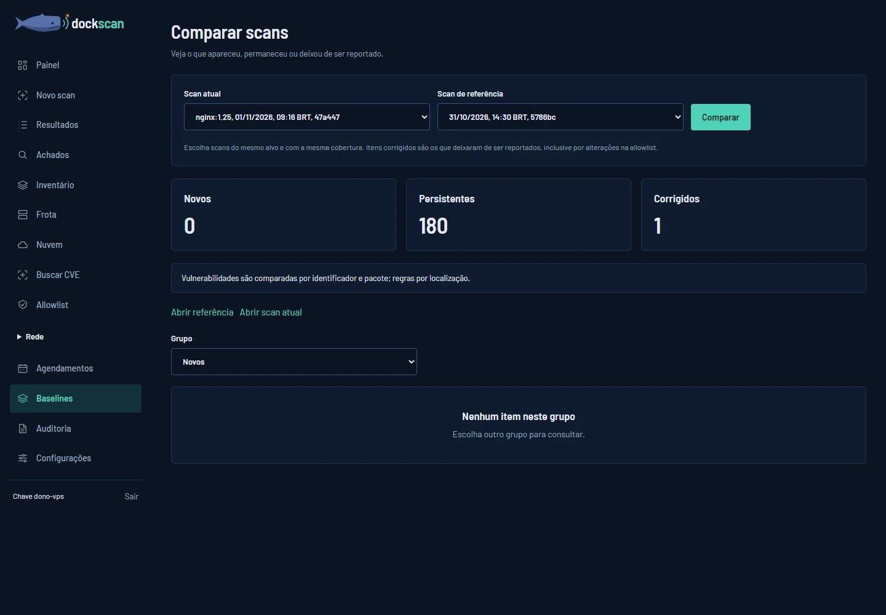
Eine deaktivierte Abfrage, ein Erfassungsfehler oder eine Änderung an der Allowlist kann die Ergebnisse verändern. „Corrigido“ (Behoben) bedeutet, dass der Befund in diesem Vergleich nicht mehr gemeldet wird. Prüfen Sie die Nachweise und Hinweise beider Scans.
Wie behandle ich eine Ausnahme über die Allowlist?
Öffnen Sie Allowlist, geben Sie pro Zeile eine Regel, die Fundstelle eines Pakets oder eine Kennung ein und klicken Sie auf Salvar allowlist (Allowlist speichern). Zeilen, die mit # beginnen, sind Kommentare.
Die Einträge werden bei den nächsten Scans angewendet und nehmen die entsprechenden Befunde aus der Bewertung heraus, ob der Scan besteht. Der bisherige Verlauf bleibt unverändert. Prüfen Sie die Reichweite jedes Eintrags: Ein Paket kann mehrere Schwachstellen umfassen.
Serverbestand analysieren
Erfassen Sie die Hosts, um die laufenden Container und ihre Konfiguration anhand des gespeicherten Inventars zu analysieren.
Öffnen Sie „Frota“ (Serverbestand) und füllen Sie das Inventar aus
Geben Sie eine IP pro Zeile ein, zusammen mit den Optionen für den SSH-Zugriff. Der DockScan-Server muss die Hosts per SSH erreichen, per Schlüssel oder über den Tresor für Zugangsdaten zugreifen können und die nötigen Leserechte haben. Der Tresor befindet sich direkt auf der Seite Frota.
Speichern Sie und starten Sie die Analyse
Klicken Sie auf Salvar inventário (Inventar speichern) und anschließend auf Configurar varredura (Scan konfigurieren). Wählen Sie unter „Novo scan“ (Neuer Scan) die IPs aus, passen Sie die Richtlinie an und klicken Sie auf „Iniciar varredura por IP“ (IP-Scan starten).
Prüfen Sie jeden Host
Öffnen Sie im Ergebnis die Hosts und prüfen Sie die Befunde der Maschine und der Container. Achten Sie auch auf Zugriffsfehler und Hinweise zur Erfassung. Kehren Sie zu „Frota“ zurück, um den letzten Scan einzusehen.
Sehen Sie sich die Maschinen im Inventário an
Nach dem Scan zeigt „Inventário“ (Inventar) die gefundenen Maschinen, Container und Dienste, als Karte nach IP-Bereich gruppiert oder als Liste. Klicken Sie auf eine Maschine, um ihre Container und Dienste zu öffnen, und finden Sie eine IP über die Suche und die Filter.
So richten Sie den SSH-Tresor ein
- Gehen Sie unter Frota zu „Cofre de acesso SSH“ (SSH-Zugangstresor).
- Geben Sie Name, Benutzer, Passwort und zulässigen Geltungsbereich ein. Aktivieren Sie sudo nur, wenn dieses Konto dafür eingerichtet ist.
- Klicken Sie auf „Salvar credencial“ (Zugangsdaten speichern). Das Passwort wird aus dem Feld entfernt und von der Oberfläche nicht wieder angezeigt.
- Wählen Sie die Zugangsdaten im Inventar mit
cred=nome-da-credencialaus. Der Geltungsbereich wird weiterhin eingehalten.
Die SSH-Identität wird bei der ersten Verbindung gespeichert. Ändert sie sich, prüfen Sie die Änderung, bevor Sie den Eintrag aus der Liste der bekannten Identitäten entfernen.
Was auf jeder Maschine ausgelesen wird
Die Erfassung nutzt nur, was auf der Maschine bereits vorhanden ist: Systembefehle und Dateien aus /proc und /etc. Sie müssen weder Python noch einen Agenten installieren. Auf einer minimalen Maschine ohne ss oder ps kommen Ports und Prozesse direkt aus dem Kernel.
- Systempakete: Debian und Ubuntu (dpkg), Alpine und Wolfi (apk), Rocky Linux, AlmaLinux, Red Hat Enterprise Linux, SUSE Linux Enterprise, openSUSE Leap, Azure Linux, openEuler, Amazon Linux und Oracle Linux (rpm). CentOS und Fedora erscheinen als nicht geprüft, weil es für sie keine Datenbank mit Sicherheitshinweisen gibt, die DockScan ausliest.
- Die Sicherheitshinweise von Debian, Ubuntu, Rocky und SUSE nennen das Quellpaket: Eine OpenSSL-Schwachstelle, die
libssl3betrifft, erscheint alsopenssl. - Bei einem Paket einer Programmiersprache, das über ein Systempaket installiert wurde (setuptools aus
python3-setuptools, die Ruby-Gems von Debian, npm von Alpine), zählt das Systempaket, das die Behebungen der Distribution enthält. - Beim Kernel zählt die laufende Version, nicht die installierten Pakete. Der Befund nennt die Gesamtzahl der CVEs und listet die auf, die jetzt wichtig sind: die aktiv ausgenutzten, die mit einer Ausnutzungswahrscheinlichkeit von 1 % oder mehr, die vor wenigen Tagen veröffentlichten und die kritischen und hohen, die ein bereits installierter Kernel beim nächsten Neustart behebt. Bei Amazon Linux und Oracle Linux erscheint der Kernel als nicht geprüft, weil OSV dessen Sicherheitshinweise nicht enthält.
- Die Pakete der Programmiersprachen (pip, npm, Gems, Composer und NuGet) und die Java-Bibliotheken (.jar, .war, .ear), in den Containern und auf der Maschine, auch in
/homeund/root; die Go-Binärdateien an beiden Orten (auf der Maschine nur die mit Go 1.18 oder neuer kompilierten) und die Rust-Binärdateien in den Containern. In einem Container ohne Shell stammen die Pakete der Programmiersprachen aus den Ordnern der Anwendung, die mitdocker cpkopiert werden. - Die außerhalb des Paketmanagers installierten Programme, etwa node, python und redis aus den offiziellen Images: Die Version stammt aus der Datei selbst, ohne dass etwas ausgeführt wird. Die Liste finden Sie unter Was DockScan erkennt.
- Die Container von Docker und Podman. Bei Podman ohne root werden die Container des Benutzers der SSH-Verbindung erfasst.
- Das Supportende des Systems der Maschine und jedes Containers.
- Für jedes verwundbare Paket, ob ein Prozess dessen Dateien gerade verwendet. Eine Go-Binärdatei, die nicht läuft, verringert die Exposition; bei Java-Bibliotheken bestätigt DockScan nur die Verwendung, weil eine vom Server entpackte .war-Datei verwendet wird, ohne geöffnet zu bleiben.
So untersuchen Sie eine CVE
- Öffnen Sie „Buscar CVE“ (CVE suchen) im Menü des Tools.
- Geben Sie die IPs und eine CVE- oder GHSA-Kennung ein.
- Klicken Sie auf „Verificar CVE nos IPs“ (CVE auf den IPs prüfen). Die Daten werden per SSH auf den ausgewählten Maschinen erfasst.
- Lesen Sie die Vorkommen, das Datum der Erfassung, die Hinweise und die Nachweise zur Verwendung. Eine unvollständige Erfassung schließt ein Ziel nicht aus.
Die Pakete werden bei der Erfassung per IP automatisch erkannt.
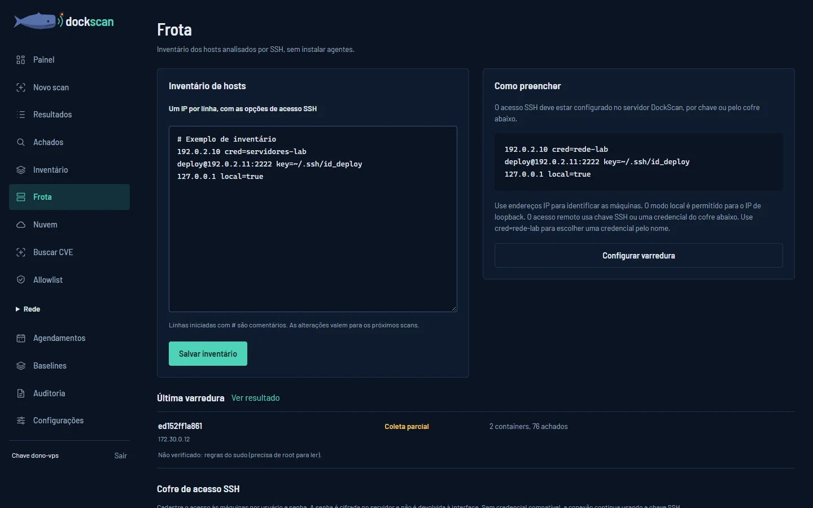
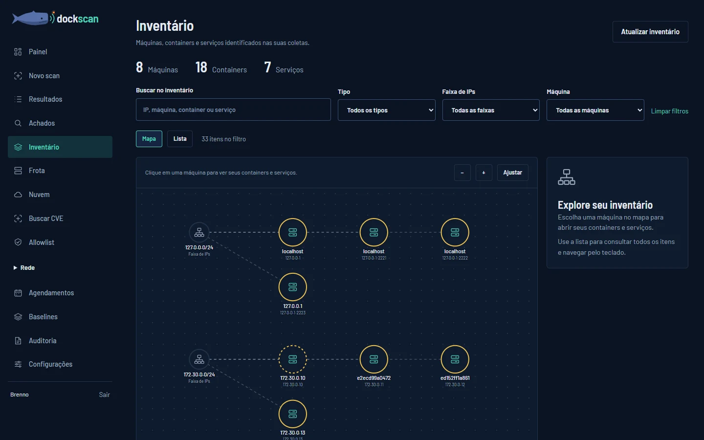
# Docker da máquina em que o DockScan está rodando
127.0.0.1 local=true
# Exemplo de host remoto: substitua pelo seu ambiente
deploy@host.exemplo.com:2222 key=~/.ssh/id_deploySchlüsselpfade und das lokale Docker werden auf der Maschine des DockScan-Servers aufgelöst. Verwenden Sie nur Hosts, für die Sie eine Zugriffsberechtigung haben.
Netzwerk erkunden
Das Modul Rede (Netzwerk) erkennt Ports und Dienste und sammelt Nachweise für Exposition auf den autorisierten Zielen.
Prüfen Sie die zulässigen Scopes
Prüfen Sie unter Configurações (Einstellungen) → Configurações de rede (Netzwerkeinstellungen) die Angaben in „Escopos de rede autorizados (IP/CIDR)“ (Autorisierte Netzwerk-Scopes). Nehmen Sie nur Netzwerke auf, die Sie analysieren dürfen. Standardmäßig ist Loopback erlaubt.
Öffnen Sie „Rede → Varrer a rede“ (Netzwerk scannen)
Geben Sie dem Scan einen Namen. Tragen Sie unter IP, range, CIDR ou múltiplos alvos (IP, Bereich, CIDR oder mehrere Ziele) die IPs und Netzwerke ein. Zum Ausprobieren auf der Maschine des Servers verwenden Sie
127.0.0.1. Sie können unter „Importar alvos“ (Ziele importieren) auch eine.txt-Liste importieren.Füllen Sie bei Bedarf die Ausschlüsse aus. Prüfen Sie die geschätzte Anzahl der Ziele und den autorisierten Scope, der im Formular angezeigt wird.
Wählen Sie das Profil und prüfen Sie die Ports
Wählen Sie unter „Configuração da varredura“ (Scan-Konfiguration) das „Perfil“ (Profil) und prüfen Sie die „Portas“ (Ports). Prüfen Sie Zeitlimit, Geschwindigkeit sowie die Module „Detectar serviços“ (Dienste erkennen), „Detectar Docker“ (Docker erkennen), „Auditar registries“ (Registries prüfen) und „Analisar TLS“ (TLS analysieren).
Bestätigen Sie die Autorisierung und klicken Sie auf „Iniciar varredura“ (Scan starten)
Verfolgen Sie den Fortschritt auf der Seite des Scans. Mit „Pausar“ (Pausieren), „Retomar“ (Fortsetzen) oder „Parar“ (Stoppen) halten Sie den Scan an, setzen ihn fort oder beenden ihn. Nach dem Stoppen bleiben die Teilergebnisse verfügbar.
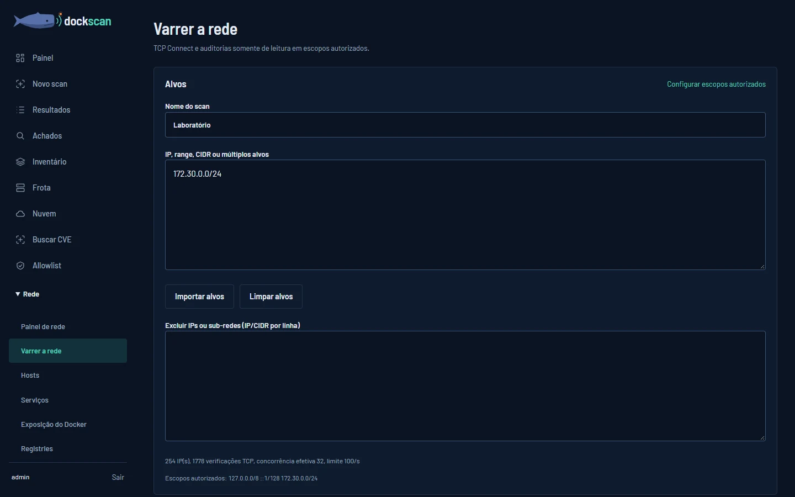
Wo Sie später nachsehen
„Em andamento“ (Laufend) zeigt die aktiven Aufträge. „Histórico“ (Verlauf) enthält die früheren Analysen. Mit „Hosts“ und „Serviços“ (Dienste) untersuchen Sie die gefundenen Hosts und Dienste.
So lesen Sie die Abdeckung
Schalten Sie auf der Seite des Scans unter „Visualização“ (Ansicht) zwischen Hosts, Ports, TCP-Abdeckung, Diensten und Befunden um. Unter „Configuração e limitações“ (Konfiguration und Einschränkungen) erfahren Sie, wie weit die Erfassung reicht.
Ein Timeout ist ein nicht eindeutiges Ergebnis
Ein Port ohne Antwort ist nicht nachweislich geschlossen. Auch ein Host ohne Antwort ist nicht nachweislich ausgeschaltet. Prüfen Sie die Abdeckungszustände, bevor Sie vergleichen oder die Untersuchung abschließen.
Welche Dienste erkennt der Scan?
Neben SSH, HTTP, TLS, Docker, Registries, Redis, PostgreSQL, MongoDB und MySQL erkennt der Scan diese Dienste an ihrer Antwort, ohne Anmeldung und ohne einen Befehl, der etwas verändert:
- FTP: die Version über das Banner und ob FTPS angeboten wird. Ohne FTPS gehen Benutzername, Passwort und Dateien unverschlüsselt über das Netz.
- SMTP: die Version, STARTTLS und eine Anmeldung, die schon vor der Verschlüsselung angeboten wird.
- RDP: die Exposition des Dienstes und ob NLA vor der Sitzung verlangt wird.
- RabbitMQ: die Version über das AMQP-Protokoll, die Verbindung ohne TLS und die Verwaltungsoberfläche auf Port 15672.
- Prometheus: die API, die ohne Anmeldung offen ist, und die Metriken der Exporter, etwa node_exporter.
Das Profil „Network Services Scan“ (Scan der Netzwerkdienste) enthält bereits die Ports dieser Dienste.
Wie vergleiche ich zwei Netzwerkscans?
Öffnen Sie „Comparar varreduras“ (Scans vergleichen) im Menü Rede oder verwenden Sie „Comparar“ (Vergleichen) im Ergebnis. Wählen Sie die beiden Analysen aus und prüfen Sie die neuen, entfernten, geänderten und unveränderten Einträge.
Einträge ohne vergleichbare Abdeckung erscheinen als „NotComparable“. Prüfen Sie Ziele, Ports und Module, bevor Sie einen Dienst als entfernt oder ein Risiko als behoben deuten.
Cloud anbinden
Das Cloud-Modul liest AWS-Konten aus, um zu finden, was Ihre Container exponiert: Maschinen, Firewall-Regeln, Registries und Cluster. Azure, Google Cloud und Kubernetes lassen sich bereits hinterlegen; das Auslesen dieser Anbieter folgt in den nächsten Etappen.
Legen Sie Zugangsdaten mit reinem Lesezugriff an
Sobald Sie den Anbieter auswählen, zeigt die Seite die minimal nötige Berechtigung und eine Schritt-für-Schritt-Anleitung zum Anlegen der Zugangsdaten. Verwenden Sie niemals den Schlüssel eines Administratorbenutzers.
Öffnen Sie „Nuvem“ (Cloud) und wählen Sie den Anbieter
Geben Sie dem Konto einen Namen und füllen Sie die Felder aus. Regionen, Abonnements, Projekte oder Namespaces legen fest, was gelesen werden darf.
Speichern Sie und klicken Sie auf „Testar conexão“ (Verbindung testen)
Bei AWS prüft der Test den Zugriff direkt in der Cloud und zeigt die verwendete Identität an. Bei den anderen Anbietern bestätigt er, dass das Konto validiert und gespeichert wurde.
Klicken Sie auf „Descobrir agora“ (Jetzt erkennen)
Die Erkennung ist ein Scan wie jeder andere: Sie öffnet sich auf der Seite des Scans, erscheint unter Resultados (Ergebnisse) und erhält je nach Richtlinie Falhou (Nicht bestanden) oder Passou (Bestanden). Die Befunde landen auf der Seite Achados (Befunde) mit
fonte = cloud, die Maschinen im Inventário (Inventar). Kann eine Region nicht gelesen werden, ist der Scan unvollständig und nennt die betreffende Region.Bearbeiten oder löschen Sie das Konto bei Bedarf
Unter „Editar“ (Bearbeiten) bleibt ein Geheimnis, das Sie leer lassen, unverändert. „Excluir“ (Löschen) entfernt das Konto und seine Geheimnisse vom Server.
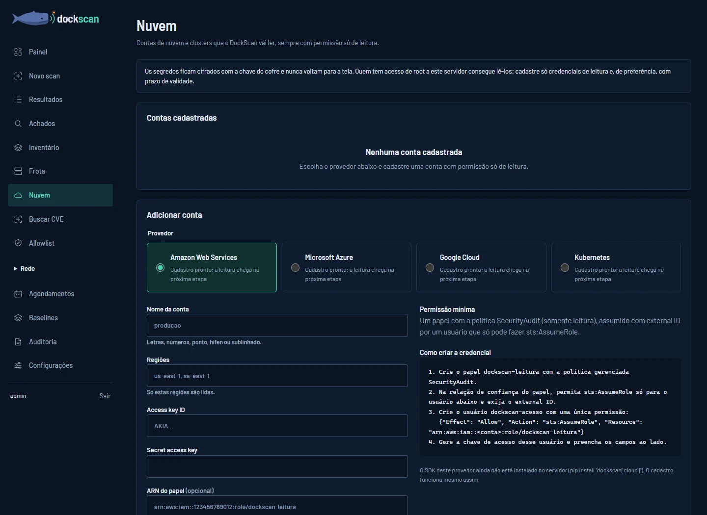
| Anbieter | Zugangsdaten mit reinem Lesezugriff | Geltungsbereich |
|---|---|---|
| AWS | Benutzer, der nur eine Rolle mit der Richtlinie SecurityAudit übernehmen darf, wobei eine External ID verlangt wird. | Regionen |
| Azure | Anwendung (Service Principal) mit der Rolle Reader. | Abonnements |
| Google Cloud | Dienstkonto mit den Rollen Viewer und Security Reviewer. | Projekte |
| Kubernetes | ServiceAccount mit einer ClusterRole, die Lesezugriff auf Pods, Nodes und Namespaces gewährt. | Namespaces |
Die Geheimnisse sind verschlüsselt, liegen aber auf dem Server
Die Zugangsdaten werden mit dem Schlüssel des Tresors verschlüsselt und nie wieder auf der Seite angezeigt. Wer Administratorzugriff auf den DockScan-Server hat, kann sie lesen: Hinterlegen Sie nur Zugangsdaten mit Lesezugriff und möglichst mit Ablaufdatum.
Warum wurde meine kubeconfig abgelehnt?
Aus Sicherheitsgründen muss die kubeconfig das Token oder das Zertifikat eingebettet sowie die CA des Clusters in certificate-authority-data enthalten. Abgelehnt werden: Authentifizierung über exec oder auth-provider, die ein Programm auf dem DockScan-Server ausführen würde; Dateipfade, über die Dateien des Servers gelesen würden; insecure-skip-tls-verify; sowie Adressen ohne https://.
Wonach sucht DockScan in der Cloud?
Nach Administrationsports, die zum Internet hin offen sind (Docker-API, kubelet, etcd, Kubernetes-API, Registry und SSH), Regeln, die alle Ports freigeben, Registries mit anonymem Lesezugriff oder mit Administratorbenutzer, überschreibbaren Tags, offener Cluster-API, Clustern ohne RBAC, Maschinen, die den Metadatendienst ohne Token akzeptieren, und privilegierten Workloads.
Bei AWS stammen diese Daten aus EC2 (Maschinen und Security Groups), ECR und EKS, jeweils in den hinterlegten Regionen. Mit dem ARN der Rolle dient der Schlüssel nur dazu, diese Rolle in einer 15-minütigen Sitzung zu übernehmen, und jeder Lesezugriff erfolgt über die Rolle. Kein Aufruf erstellt oder ändert Ressourcen.
„Descobrir agora“ wird nicht angezeigt
Die Schaltfläche erscheint, wenn es für den Anbieter bereits einen Connector gibt und dessen SDK auf dem DockScan-Server installiert ist. Für AWS installieren Sie es mit pip install "dockscan[cloud]". Auch der Verbindungstest weist darauf hin, wenn das SDK fehlt.
Analysen planen
Wiederholen Sie eine Analyse in festgelegten Intervallen und sehen Sie das Ergebnis jedes Durchlaufs im Verlauf ein.
Öffnen Sie „Agendamentos“ (Zeitpläne) und benennen Sie die Routine
Legen Sie das Intervall in Minuten und die erste Ausführung fest. Für eine tägliche Ausführung verwenden Sie 1440 Minuten. Die Oberfläche akzeptiert 5 bis 10080 Minuten.
Geben Sie Ziel und Richtlinie an
Geben Sie die IPs der Maschinen und die Kriterien für das Nichtbestehen ein. Die Auswahl wird in der Routine gespeichert, und der SSH-Zugriff verwendet die Einstellungen unter Frota (Serverbestand).
Klicken Sie auf „Criar agendamento“ (Zeitplan erstellen)
Die Routine erscheint unter „Scans agendados“ (Geplante Scans). Mit Executar agora (Jetzt ausführen) starten Sie einen manuellen Durchlauf, mit Pausar (Pausieren) setzen Sie die nächsten Durchläufe aus, und mit Retomar (Fortsetzen) aktivieren Sie sie wieder. Wenn Sie den Zeitplan löschen, bleiben die bisherigen Scans erhalten.
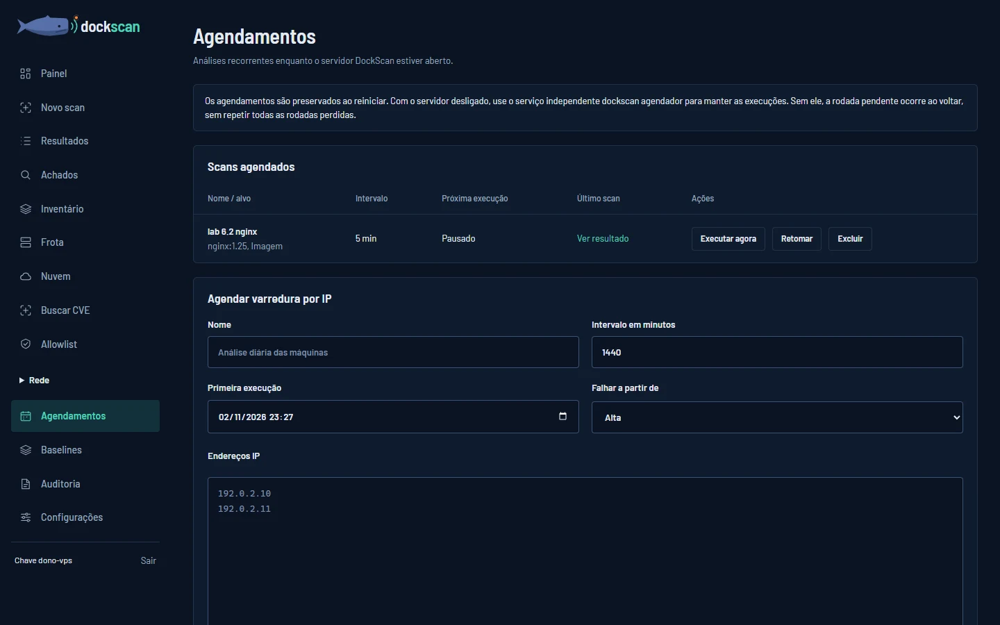
Der Zeitplan wiederholt die Erfassung auf den ausgewählten IPs und ermittelt die aktuellen Daten der Maschinen. Wenn Sie dem Inventar weitere IPs hinzufügen, erweitert das nicht das Ziel einer bereits angelegten Routine.
Laufen die Analysen weiter, wenn die Oberfläche geschlossen ist?
Wenn Sie den Browser-Tab schließen, wird der Server nicht beendet. Die Routinen laufen weiter, solange der DockScan-Server läuft. Damit sie auch bei ausgeschaltetem Webserver laufen, halten Sie den unten aufgeführten eigenständigen Dienst aktiv und verwenden dabei dasselbe Datenverzeichnis wie Ihre Instanz.
python -m dockscan agendador --data-dir ~/.dockscanOhne den Server und ohne diesen Dienst werden keine Durchläufe ausgeführt. Sobald wieder einer von beiden läuft, wird der ausstehende Durchlauf nachgeholt, ohne alle verpassten Durchläufe zu wiederholen.
Berichte exportieren
Wählen Sie das Format je nach Zweck: Lesen, Automatisierung oder Komponenteninventar.
Maschinen und Container
- Öffnen Sie unter Resultados (Ergebnisse) eine abgeschlossene Analyse.
- Klicken Sie in der Übersicht auf HTML, JSON oder SARIF.
- Wenn Paketdaten vorliegen, exportieren Sie das SBOM mit CycloneDX oder SPDX.
Netzwerkscans
- Öffnen Sie das Ergebnis und suchen Sie „Exportar relatório“ (Bericht exportieren).
- Wählen Sie Format, Hosts und Schweregrade und legen Sie fest, ob Nachweise enthalten sein sollen.
- Für CSV wählen Sie die gewünschte Tabelle. Klicken Sie auf „Exportar relatório“, um die Datei herunterzuladen.
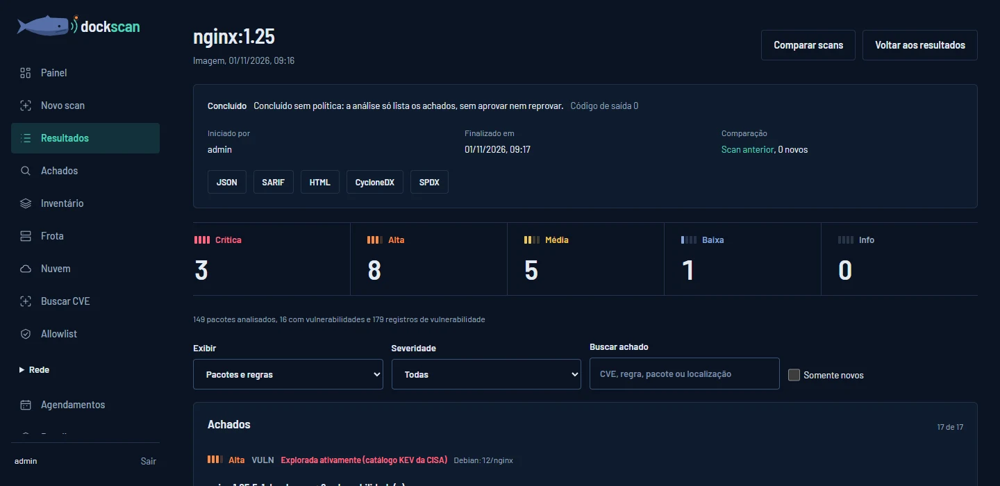
| Format | Wann verwenden |
|---|---|
| HTML | Visueller Bericht zum Öffnen im Browser und zum Teilen. |
| JSON | Strukturierte Daten für Integrationen und Weiterverarbeitung. |
| SARIF | Befunde im Format der statischen Analyse für kompatible Tools. |
| CSV | Netzwerktabellen und das Ergebnis einer Abfrage auf der Seite Achados (Befunde), zum Öffnen in Tabellenkalkulationen. |
| CycloneDX / SPDX | Komponenteninventar bei Scans, die Paketdaten enthalten. |
Die Filter der Befundliste helfen beim Navigieren in der Oberfläche. Prüfen Sie beim Netzwerkexport die Filter im Formular „Exportar relatório“ selbst, um den Inhalt der Datei festzulegen.
Konten und Zugriff
Jede Person meldet sich mit eigenem Benutzernamen und Passwort an, und die Rolle des Kontos legt fest, was sie tun darf. All das finden Sie unter Configurações (Einstellungen).
Melden Sie sich mit Benutzername und Passwort an
Verwenden Sie auf der Anmeldeseite den Benutzernamen oder die E-Mail-Adresse des Kontos. „Manter conectado“ (Angemeldet bleiben) hält die Sitzung in diesem Browser bis zu 7 Tage offen; ohne diese Option endet die Sitzung nach 30 Minuten Inaktivität oder nach 12 Stunden.
Legen Sie bei der ersten Anmeldung Ihr Passwort fest
Die Person, die das Konto anlegt, erhält ein temporäres Passwort, um es an Sie weiterzugeben. Wenn Sie sich damit anmelden, verlangt DockScan Ihr eigenes Passwort, bevor irgendeine Seite geöffnet wird: mindestens 12 Zeichen und nicht identisch mit dem Benutzernamen.
Prüfen Sie Ihr Profil unter Configurações
Klicken Sie unten im Menü auf Ihren Namen. Das Profil zeigt Benutzername, E-Mail-Adresse, Rolle und wann das Passwort zuletzt geändert wurde. Dort passen Sie Name und E-Mail-Adresse an, ändern Ihr Passwort und sehen die in anderen Browsern offenen Sitzungen, die Sie jeweils einzeln beenden können.
Administratoren: Legen Sie die Konten des Teams an
Geben Sie unter Usuários (Benutzer) Name, Benutzername und Rolle ein und klicken Sie auf „Criar usuário“ (Benutzer anlegen). Das temporäre Passwort wird einmalig angezeigt, zusammen mit der Schaltfläche Copiar (Kopieren): Übermitteln Sie es über einen sicheren Kanal. Bei jedem Konto ändern Sie mit Editar (Bearbeiten) Name, E-Mail-Adresse, Rolle und ob das Konto aktiv ist; Redefinir senha (Passwort zurücksetzen) erzeugt ein neues temporäres Passwort; Excluir (Löschen) entzieht den Zugriff.
Aktivieren Sie die Bestätigung in zwei Schritten
Klicken Sie unter Configurações auf „Ativar a verificação em duas etapas“ (Bestätigung in zwei Schritten aktivieren), scannen Sie den QR-Code mit einer Authenticator-App (Google Authenticator, Microsoft Authenticator, Authy oder 2FAS) und geben Sie den angezeigten 6-stelligen Code zusammen mit Ihrem Passwort ein. Bewahren Sie die 10 Wiederherstellungscodes auf, die danach erscheinen: Jeder ermöglicht eine Anmeldung, falls Sie Ihr Handy verlieren. Ab dann fragt die Anmeldung nach dem Passwort auch den Code ab.
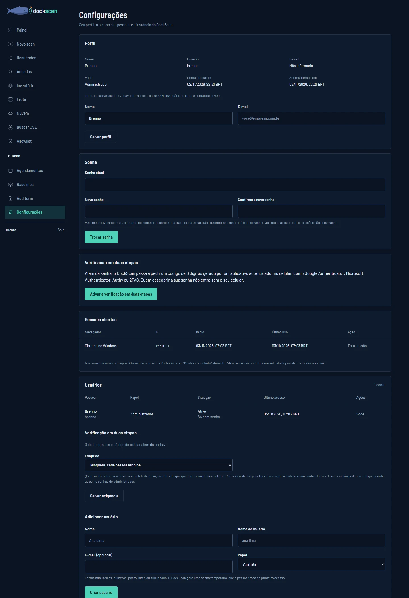
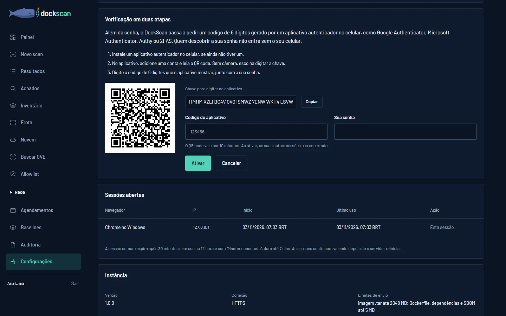
| Rolle | Darf |
|---|---|
| Administrador (Administrator) | Alles, einschließlich Benutzer, Zugriffsschlüssel, SSH-Tresor, Inventar unter Frota (Serverbestand), Cloud-Konten und Netzwerkeinstellungen. |
| Analista (Analyst) | Scans und CVE-Suchen ausführen, die Triage der Befunde durchführen, Allowlist, Ansichten, Tags und Zeitpläne bearbeiten. |
| Leitura (Nur Lesen) | Ergebnisse und Befunde einsehen und exportieren, ohne etwas zu ändern. |
Was die Rolle nicht erlaubt, wird auf der Seite nicht angezeigt. Eine Rollenänderung gilt sofort, ohne dass sich die Person neu anmelden muss. DockScan lässt den Server nie ohne aktiven Administrator, und niemand kann die eigene Rolle ändern oder das eigene Konto deaktivieren.
Mit einem Zugriffsschlüssel melden Sie sich als Administrator an, ohne Benutzername und Passwort. Verwenden Sie ihn für Automatisierung und zur Wiederherstellung des Zugriffs; für Personen ist ein Konto vorzuziehen. Erzeugen und widerrufen Sie die Schlüssel unter Configurações. Der Schlüssel wird nur ein einziges Mal angezeigt.
Unter Usuários (Benutzer) legen Administratoren fest, wer die Bestätigung in zwei Schritten nutzen muss: niemand, Administratoren oder alle Konten. Wer sie noch nicht aktiviert hat, sieht vor jedem anderen Bildschirm die Aktivierung. Um sie für Ihre eigene Rolle vorzuschreiben, aktivieren Sie sie zuerst für Ihr Konto. Zugriffsschlüssel verlangen keinen Code: Bewahren Sie sie wie Administratorpasswörter auf.
Ich habe mein Passwort vergessen
Bitten Sie einen Administrator, für Ihr Konto Redefinir senha zu verwenden: Sie erhalten ein temporäres Passwort und wählen bei der nächsten Anmeldung Ihr eigenes. Ihre offenen Sitzungen werden dabei beendet.
Ist kein Administrator verfügbar, kann jemand mit Zugriff auf den Server das Passwort über das Terminal ändern, mit demselben Datenverzeichnis wie die Instanz:
dockscan usuarios senha --usuario SEU_USUARIOIch habe das Handy für die Bestätigung in zwei Schritten verloren
Klicken Sie auf dem Anmeldebildschirm nach dem Passwort auf „Usar um código de recuperação“ (Wiederherstellungscode verwenden) und geben Sie einen der aufbewahrten Codes ein. Nach der Anmeldung erzeugen Sie neue Codes oder deaktivieren die Bestätigung und aktivieren sie mit dem neuen Handy wieder.
Ohne Codes bitten Sie einen Administrator, bei Ihrem Konto „Remover verificação“ (Bestätigung entfernen) zu verwenden: Ihre Sitzungen werden beendet, und die nächste Anmeldung verlangt nur das Passwort. Ohne verfügbaren Administrator über das Terminal des Servers:
dockscan usuarios remover-verificacao --usuario SEU_USUARIODer Code wird nicht akzeptiert
Der Code ändert sich alle 30 Sekunden, und jeder gilt nur einmal. Geben Sie den Code ein, den die App gerade anzeigt, und prüfen Sie, ob Datum und Uhrzeit des Handys automatisch eingestellt sind. Fünf falsche Codes in Folge führen zurück zum Passwort; zu viele Fehler sperren weitere Versuche für 15 Minuten.
Warum wurde meine Sitzung beendet?
Die Sitzung endet nach 30 Minuten Inaktivität, nach 12 Stunden (7 Tagen mit „Manter conectado“), wenn Sie sich abmelden, wenn eine andere Ihrer Sitzungen sie unter Configurações beendet, wenn Sie Ihr Passwort ändern (die anderen Sitzungen werden abgemeldet) oder wenn ein Administrator Ihr Passwort zurücksetzt oder das Konto deaktiviert. Ein Neustart des Servers beendet die Sitzungen nicht. Das Aktivieren der Bestätigung in zwei Schritten beendet ebenfalls Ihre anderen Sitzungen, und ein Administrator beendet Ihre Sitzungen, wenn er Ihre Bestätigung entfernt.
Es erscheint „O papel não permite esta ação“ (Die Rolle erlaubt diese Aktion nicht)
Ihr Konto hat dafür keine Berechtigung, etwa um das Inventar unter Frota mit der Rolle Analista zu bearbeiten. Bitten Sie einen Administrator, die Änderung vorzunehmen oder Ihre Rolle anzupassen.
In Entwicklung
DockScan ist ein Tool in Entwicklung. Seiten und Bezeichnungen können sich zwischen Versionen ändern. Dieses Kapitel zeigt, was kürzlich hinzugekommen ist und was als Nächstes folgt.
Neu in dieser Version
- Mehr Distributionen: Red Hat Enterprise Linux (auch in den UBI-Images), SUSE Linux Enterprise, openSUSE Leap, Amazon Linux, Oracle Linux, Azure Linux, openEuler und Wolfi, in Images, in Containern und auf Maschinen. Amazon Linux und Oracle Linux nutzen die Sicherheitshinweise aus ihren eigenen Repositories.
- Docker Compose: im ganzen Projekt und im Terminal der privilegierte Modus, der Docker-Socket, die Verzeichnisse und Namespaces des Hosts, die Capabilities, Datenbank- und Verwaltungsports, die auf allen Netzwerkschnittstellen offen sind, ein Image ohne Version, ein in die Datei geschriebenes Passwort und eine Datenbank ohne Passwort.
- Weniger Falsch-Positive: Bei einem Python-, Node- oder Ruby-Paket, das über ein Systempaket installiert wurde, zählt das Systempaket, mit den Behebungen der Distribution. Außerdem entfallen Hinweise zu Fehlerbehebungen ohne CVE, Rust-Bibliotheken, die nur beim Kompilieren verwendet werden, und rein informative RUSTSEC-Hinweise.
- Rede (Netzwerk): FTP, SMTP, RDP, RabbitMQ und Prometheus, mit fehlender Verschlüsselung, NLA, der Verwaltungsoberfläche und offenen Metriken, sowie das Profil Network Services Scan.
- Ganzes Projekt: über die URL des Git-Repositorys oder als .zip die Abhängigkeiten, Dockerfiles, Kubernetes-Manifeste, Helm-Charts, Terraform, Geheimnisse und Lizenzen in einer einzigen Analyse.
- Schicht des Images: Jedes Paket eines Images zeigt, aus welcher Schicht es stammt und ob die Behebung im Basis-Image oder im Dockerfile liegt.
- Podman auf den Maschinen des Serverbestands, auch ohne root.
- Jira und Benachrichtigungen an das Team: das Ticket aus dem Befund und die Benachrichtigung per Webhook oder E-Mail am Ende der Scans.
- Mehr Quellen und Dateien: die Sicherheitsdatenbank von Alpine, JAR-Dateien ohne Maven-Daten über Maven Central, uv.lock, pnpm-lock.yaml, bun.lock, gradle.lockfile, pom.xml, packages.lock.json, mix.lock, pubspec.lock und Package.resolved sowie die Pakete aus den Repositories der Hersteller (MongoDB, MariaDB, PGDG, nginx.org und RabbitMQ). Hat das Paket des Herstellers denselben Namen wie das der Distribution, erscheint jede CVE nur einmal, im Befund mit der vom Hersteller korrigierten Version.
- Ältere Go-Programme und SBOM: Programme, die vor Go 1.18 kompiliert wurden, werden in Images und Containern gelesen. Im SBOM erscheinen Java- und .NET-Bibliotheken sowie Pakete von Rocky Linux und AlmaLinux mit dem richtigen Typ (Maven, NuGet und rpm), und SBOMs anderer Tools mit diesen Paketen werden korrekt gelesen.
- Was DockScan erkennt: die Systeme, Sprachen, Programme, Dienste und Formate, die es ausliest, jeweils mit Logo, und was in Entwicklung ist.
- Mehr ausgelesene Orte: der laufende Kernel, die außerhalb des Paketmanagers installierten Programme (etwa node, python und redis aus den offiziellen Images), die Go-Binärdateien und Java-Bibliotheken der Maschine, die Ordner
/homeund/rootsowie Container ohne Shell. - Supportende: Ein System, das keine Sicherheitsupdates mehr erhält, wird zum Befund, mit der Version, auf die Sie wechseln können.
- Priorität unter Achados: Corrigir agora, Esta semana, Planejar und Acompanhar (Sofort beheben, Diese Woche, Planen, Beobachten), nach aktiver Ausnutzung, Ausnutzungswahrscheinlichkeit, Verwendung und Exposition im Netzwerk.
- Bestätigung in zwei Schritten: 6-stelliger Code aus einer Authenticator-App, 10 Wiederherstellungscodes und die Möglichkeit, sie für Administratoren oder alle Konten vorzuschreiben.
- Befundbereich: Klicken Sie auf die Schwachstelle, um CVSS, EPSS, Fundort, Behebung, die OSV-Beschreibung, die anderen Assets und den Verlauf zu sehen, ohne die Abfrage zu verlassen.
- Handbuch auf Portugiesisch, Englisch, Spanisch, Französisch, Deutsch und Japanisch: Wählen Sie die Sprache oben auf der Seite.
- Konten und Zugriff: ein Konto pro Person, mit Benutzername und Passwort und den Rollen Administrador, Analista und Leitura (Administrator, Analyst, Nur Lesen); Profil, Passwortänderung und offene Sitzungen unter Configurações (Einstellungen); Sitzungen bleiben nach einem Neustart des Servers bestehen.
- Achados (Befunde): Zustand jedes Befunds anhand des Verlaufs (novo, ativo, reapareceu, corrigido, also neu, aktiv, wieder aufgetreten, behoben), Triage mit Frist und für mehrere Befunde zugleich, Tags im Format Kategorie:Wert, gespeicherte Ansichten, Korrekturplan, Sortierung nach Spalte und Abfrage über das Terminal.
- Nuvem (Cloud): Auslesen von AWS (EC2, Security Groups, ECR und EKS) als Scan, mit den Befunden unter Achados und den Maschinen im Inventário (Inventar).
- Frota (Serverbestand): ein Zugang pro IP im Inventar, der beim Speichern geprüft wird; eine Maschine, die aus dem Inventar entfernt wird, verschwindet auch aus Achados, ihr Verlauf bleibt unter Resultados (Ergebnisse) erhalten.
- Maschinen: RPM-Pakete von Rocky Linux und AlmaLinux, Schwachstellen über das Quellpaket (
libssl3zeigt jetzt die Schwachstellen von OpenSSL), Verwendung von Go-Binärdateien und Java-Bibliotheken sowie eine Erfassung, die nur nutzt, was auf der Maschine bereits vorhanden ist. - Painel (Dashboard) mit Direktlinks zu Achados, Uhrzeiten mit Zeitzone sowie überarbeitete Seiten Achados und Nuvem für Tastatur und Screenreader.
- Ergebnisse mit klaren Bezeichnungen: „Falhou“ (Nicht bestanden) und „Passou“ (Bestanden) für die Richtlinie; „Erro na análise“ (Analysefehler) wird anders dargestellt, weil es sich um einen technischen Fehler handelt.
Nächste Etappen
- Auslesen von Azure, Google Cloud und Kubernetes im selben Format wie bei AWS.
- Die Pakete von CentOS und Fedora, die modularen Pakete von Oracle Linux und die Schwachstellen, die Red Hat noch nicht behoben hat.
- C und C++ sowie MySQL, sobald OSV die Sicherheitshinweise dazu liefert. Die vollständige Liste dessen, was als Nächstes folgt, finden Sie unter Was DockScan erkennt.
Eine Funktion kann in Etappen kommen: Unter Nuvem wird zum Beispiel AWS vor den anderen Anbietern ausgelesen. Das Handbuch wird bei jeder Etappe zusammen mit dem Tool aktualisiert.
Häufige Fragen
Prüfen Sie den Zustand der Analyse, bevor Sie das Ergebnis deuten.
Der Scan hat keine Befunde geliefert. Ist alles sicher?
Prüfen Sie, ob die Analyse abgeschlossen ist, ob Filter Einträge ausblenden und ob Hinweise auf Fehler oder eine unvollständige Erfassung erscheinen. Prüfen Sie außerdem, ob die CVE-Abfrage deaktiviert wurde und ob es Einträge in der Allowlist gibt. Keine Befunde bedeutet, dass dieser Durchlauf innerhalb der erreichten Abdeckung nichts gemeldet hat.
Eine IP wurde nicht akzeptiert
Geben Sie die IPv4- oder IPv6-Adresse der Maschine ein, ohne DNS-Namen, Benutzer, Port oder Bereich. Wenn ein abweichender SSH-Port verwendet wird, konfigurieren Sie ihn im Inventar unter Frota (Serverbestand).
Keine Verbindung zur Maschine möglich
Prüfen Sie, ob der DockScan-Server die IP erreicht, ob SSH verfügbar ist und ob die Zugangsdaten im Tresor diese Adresse abdecken. Lesen Sie den Fehler und die Hinweise des Scans, um festzustellen, welche Teile der Erfassung fehlgeschlagen sind.
Ein Host im Serverbestand ist fehlgeschlagen
Prüfen Sie Adresse, Benutzer, Port und Schlüsselpfad im Inventar. Der SSH-Zugriff und die Abfrage von Docker müssen von der Maschine des Servers aus funktionieren. Lesen Sie die Hinweise je Host; ein Zugriffsfehler kann die Erfassung dieses Ziels verhindern.
Der Netzwerkscan hat mein Ziel abgelehnt
Prüfen Sie, ob Sie eine IP, einen Bereich oder ein CIDR angegeben haben und ob es innerhalb von „Escopos de rede autorizados“ (Autorisierte Netzwerk-Scopes) liegt. Hostnamen und URLs sind in diesem Feld keine gültigen Eingaben. Prüfen Sie auch Ausschlüsse und Host-Limits. Passen Sie die globalen Einstellungen an, wenn keine Scans aktiv sind.
In welcher Zeitzone werden die Uhrzeiten angezeigt?
In der Zeitzone Ihres Browsers, mit dem Kürzel daneben, etwa „02/11/2026, 14:21 BRT“. Der Server speichert jede Uhrzeit mit seiner eigenen Zeitzone, sodass jemand, der die Seite von einem anderen Ort aus öffnet, die für ihn richtige Uhrzeit sieht.
Im Vergleich sind keine neuen Einträge erschienen
Prüfen Sie, ob es eine kompatible frühere Referenz gibt und ob der Vergleich aktiviert wurde. Verwenden Sie dieselben IPs und dieselben Abdeckungsoptionen. Prüfen Sie die Hinweise zur Abdeckung, die Allowlist und den Filter „Somente novos“ (Nur neue). Beim ersten Durchlauf gibt es keine Baseline, an der sich Neues erkennen ließe.
Bereit für den nächsten Scan?
Wählen Sie das Ziel, prüfen Sie die Richtlinie und verfolgen Sie die Entwicklung.